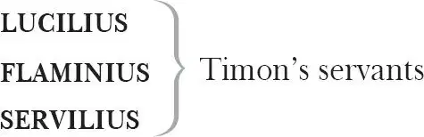
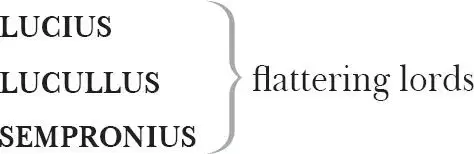
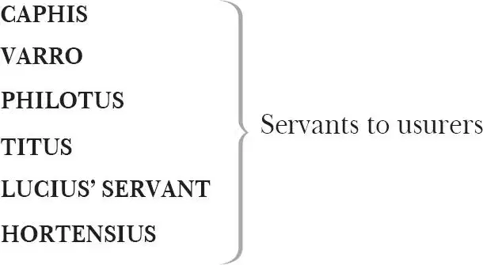
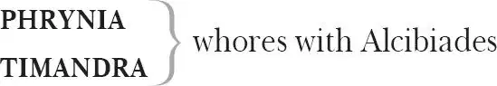

The Life of Timon of Athens
TIMON OF ATHENS
FLAVIUS , steward to Timon
ALCIBIADES, an Athenian captain 1
APEMANTUS , a churlish philosopher

A POET
A PAINTER
A JEWELLER
A MERCHANT who trades in silks
A FOOL
AN OLD ATHENIAN MAN

VENTIDIUS , one of Timon's false friends

SENATORS
CUPID and MASQUERS
BANDITTI

Three STRANGERS , the second called Hostilius
Two MESSENGERS
Other LORDS
Servants, Attendants
Act 1
Scene 1 2 / running scene 1
Enter Poet, Painter, Jeweller, Merchant (a Mercer 3 ) at several 4 doors
POET Good day, sir.
PAINTER I am glad you're well.
POET I have not seen you long 5 . How goes the world? 6
PAINTER It wears 7 , sir, as it grows 8 .
POET Ay, that's well known.
But what particular rarity 9 ? What strange 10 ,
Which manifold record 11 not matches 12 ? See,
Magic of bounty 13 , all these spirits 14 thy power
Hath conjured 15 to attend 16 . I know the merchant.
PAINTER I know them both: th'other's a jeweller.
MERCHANT O, 'tis a worthy lord.
To Jeweller
JEWELLER Nay, that's most fixed 17 .
MERCHANT A most incomparable man, breathed 18 , as it were,
To an untirable and continuate 19 goodness:
He passes 20 .
JEWELLER I have a jewel here—
MERCHANT O, pray let's see't. For the lord Timon, sir?
JEWELLER If he will touch the estimate 21 . But for that—
POET 'When we 22 for recompense 23 have praised the vile,
Recites
It stains the glory in that happy 24 verse
Which aptly 25 sings the good.'
MERCHANT 'Tis a good form 26 .
Looks at the jewel
JEWELLER And rich 27 : here is a water 28 , look ye.
PAINTER You are rapt 29 , sir, in some work, some dedication 30
To Poet
To the great lord.
POET A thing slipped idly 31 from me.
Our poesy is as a gum, which oozes
From whence 'tis nourished. The fire i'th'flint
Shows not till it be struck: our gentle flame
Provokes itself 32 and like the current 33 flies 34
Each bound 35 it chafes 36 . What have you there?
PAINTER A picture, sir. When comes your book forth?
POET Upon the heels of my presentment 37 , sir.
Let's see your piece.
PAINTER 'Tis a good piece.
Shows the painting
POET So 'tis: this comes off 38 well and excellent.
PAINTER Indifferent 39 .
POET Admirable. How this grace
Speaks his own standing 40 ! What a mental power
This eye shoots forth! How big 41 imagination
Moves 42 in this lip! To th'dumbness of the gesture
One might interpret 43 .
PAINTER It is a pretty 44 mocking 45 of the life.
Here is a touch 46 : is't good?
POET I will say of it,
It tutors nature 47 : artificial strife 48
Lives in these touches livelier 49 than life.
Enter certain Senators
They pass over the stage
PAINTER How this lord is followed 50 .
POET The senators of Athens, happy men.
PAINTER Look, more.
POET You see this confluence 51 , this great flood of visitors.
I have in this rough work shaped out a man
Shows the poem
Whom this beneath world 52 doth embrace and hug
With amplest entertainment 53 : my free drift 54
Halts not particularly 55 , but moves itself
In a wide sea of wax 56 — no levelled 57 malice
Infects one comma 58 in the course I hold —
But flies an eagle flight, bold and forth on,
Leaving no tract 59 behind.
PAINTER How shall I understand you? 60
POET I will unbolt 61 to you.
You see how all conditions 62 , how all minds,
As well of glib 63 and slipp'ry 64 creatures as
Of grave 65 and austere 66 quality 67 , tender down 68
Their services to Lord Timon: his large fortune
Upon his good and gracious nature hanging 69
Subdues 70 and properties 71 to his love and tendance 72
All sorts of hearts; yea, from the glass-faced 73 flatterer
To Apemantus, that few things loves better
Than to abhor 74 himself — even he drops down
The knee 75 before him, and returns 76 in peace
Most rich in Timon's nod 77 .
PAINTER I saw them speak together.
POET Sir, I have upon a high and pleasant hill
Feigned 78 Fortune to be throned: the base o'th'mount
Is ranked with all deserts 79 , all kind of natures
That labour on the bosom of this sphere 80
To propagate 81 their states 82 , amongst them all
Whose eyes are on this sovereign lady 83 fixed
One do I personate 84 of Lord Timon's frame 85 ,
Whom Fortune with her ivory hand wafts 86 to her,
Whose 87 present grace to present slaves and servants
Translates his rivals 88 .
PAINTER 'Tis conceived to scope 89 .
This throne, this Fortune, and this hill, methinks,
With one man beckoned from the rest below,
Bowing his head against 90 the steepy mount
To climb his happiness, would be well expressed
In our condition 91 .
POET Nay, sir, but hear me on 92 .
All those which were his fellows 93 but of late 94 ,
Some better than his value 95 , on the moment
Follow his strides, his lobbies fill with tendance 96 ,
Rain sacrificial 97 whisperings in his ear,
Make sacred even his stirrup 98 , and through him
Drink the free air 99 .
PAINTER Ay, marry 100 , what of these?
POET When Fortune in her shift and change of mood
Spurns down 101 her late belovèd, all his dependants,
Which laboured after him to the mountain's top
Even on their knees and hands, let him fly down,
Not one accompanying his declining 102 foot.
PAINTER 'Tis common:
A thousand moral paintings I can show
That shall demonstrate these quick 103 blows of Fortune's
More pregnantly 104 than words. Yet you do well
To show Lord Timon that mean 105 eyes have seen
The foot above the head 106 .
Trumpets sound. Enter Lord Timon [with Lucilius and other servants following ], addressing himself courteously to every suitor 107 [and then speaking with a Messenger ]
TIMON Imprisoned is he, say you?
MESSENGER Ay, my good lord: five talents 108 is his debt,
His means 109 most short, his creditors most strait 110 .
Your honourable letter he desires
To those have shut him up, which failing,
TIMON Noble Ventidius! Well,
I am not of that feather 113 to shake off
My friend when he must need me. I do know him
A gentleman that well deserves a help,
Which he shall have: I'll pay the debt and free him.
MESSENGER Your lordship ever binds him 114 .
TIMON Commend me 115 to him. I will send his ransom,
And being enfranchised 116 , bid him come to me:
'Tis not enough to help the feeble up,
But to support him after. Fare you well.
MESSENGER All happiness to your honour.
Exit
Enter an old Athenian
OLD MAN Lord Timon, hear me speak.
TIMON Freely, good father 117 .
OLD MAN Thou hast a servant named Lucilius.
TIMON I have so: what of him?
OLD MAN Most noble Timon, call the man before thee.
TIMON Attends he here or no? Lucilius!
Calls
LUCILIUS Here, at your lordship's service.
Comes forward
OLD MAN This fellow here, Lord Timon, this thy creature 118 ,
By night frequents my house. I am a man
That from my first 119 have been inclined to thrift 120 ,
And my estate deserves an heir more raised 121
Than one which holds a trencher 122 123 .
TIMON Well, what further?
OLD MAN One only daughter have I, no kin else
On whom I may confer what I have got:
The maid is fair, o'th'youngest for a bride 124 ,
And I have bred 125 her at my dearest cost
In qualities 126 of the best. This man of thine
Attempts 127 her love: I prithee, noble lord,
Join with me to forbid him her resort 128 ,
Myself have spoke in vain.
TIMON The man is honest 129 .
OLD MAN Therefore he will be 130 , Timon:
His honesty rewards him in itself,
It must not bear 131 my daughter.
TIMON Does she love him?
OLD MAN She is young and apt 132 :
Our own precedent 133 passions do instruct us
What levity 134 's in youth.
TIMON Love you the maid?
To Lucilius
LUCILIUS Ay, my good lord, and she accepts of it.
OLD MAN If in her marriage my consent be missing,
I call the gods to witness, I will choose
Mine heir from forth the beggars of the world,
And dispossess her all 135 .
TIMON How shall she be endowed 136
If she be mated with an equal husband?
OLD MAN Three talents on the present; in future, all.
TIMON This gentleman 137 of mine hath served me long:
To build his fortune I will strain a little,
For 'tis a bond 138 in men. Give him thy daughter:
What you bestow, in him I'll counterpoise 139 ,
And make him weigh with 140 her.
OLD MAN Most noble lord,
Pawn me to this your honour 141 , she is his.
TIMON My hand to thee: mine honour on my promise.
LUCILIUS Humbly I thank your lordship: never may
That state 142 or fortune fall into my keeping,
Which is not owed to you!
Exeunt [Lucilius and Old Man ]
POET Vouchsafe 143 my labour, and long live your lordship!
Presents the poem
TIMON I thank you. You shall hear from me anon 144 :
Go not away.— What have you there, my friend?
To the Painter
PAINTER A piece of painting, which I do beseech
Your lordship to accept.
Presents the painting
TIMON Painting is welcome.
The painting is almost the natural man 145 ,
For since dishonour traffics 146 with man's nature,
He is but outside 147 : these pencilled 148 figures are
Even such as they give out 149 . I like your work,
And you shall find I like it 150 : wait attendance
Till you hear further from me.
PAINTER The gods preserve ye!
TIMON Well fare you, gentleman: give me your hand,
We must needs 151 dine together.— Sir, your jewel
To the Jeweller
Hath suffered under praise 152 .
JEWELLER What, my lord, dispraise?
TIMON A mere satiety 153 of commendations.
If I should pay you for't as 'tis extolled 154
It would unclew 155 me quite.
JEWELLER My lord, 'tis rated 156
As those which sell would give 157 : but you well know
Things of like 158 value differing in the owners
Are prized by their masters 159 . Believe't, dear lord,
You mend 160 the jewel by the wearing it.
Presents the jewel
TIMON Well mocked 161 .
Enter Apemantus
MERCHANT No, my good lord, he speaks the common tongue 162
Which all men speak with him.
TIMON Look, who comes here. Will you be chid? 163
JEWELLER We'll bear with your lordship.
MERCHANT He'll spare none.
TIMON Good morrow 164 to thee, gentle 165 Apemantus!
APEMANTUS Till I be gentle, stay 166 thou for thy good morrow —
When 167 thou art Timon's dog, and these knaves honest.
TIMON Why dost thou call them knaves? Thou know'st them not.
APEMANTUS Are they not Athenians?
TIMON Yes.
APEMANTUS Then I repent not.
JEWELLER You know me, Apemantus?
APEMANTUS Thou know'st I do: I called thee by thy name 168 .
TIMON Thou art proud 169 , Apemantus!
APEMANTUS Of nothing so much as that I am not like Timon.
TIMON Whither art going?
APEMANTUS To knock out an honest Athenian's brains.
TIMON That's a deed thou'lt die for.
APEMANTUS Right, if doing nothing 170 be death by th'law.
TIMON How lik'st thou this picture, Apemantus?
APEMANTUS The best, for the innocence 171 .
TIMON Wrought 172 he not well that painted it?
APEMANTUS He 173 wrought better that made the painter, and yet he's but a filthy piece of work.
PAINTER You're a dog 174 .
APEMANTUS Thy mother's of my generation 175 : what's she, if I be a dog?
TIMON Wilt dine with me, Apemantus?
APEMANTUS No, I eat not lords 176 .
TIMON An 177 thou shouldst, thou'dst anger ladies.
APEMANTUS O, they eat 178 lords: so they come by 179 great bellies 180 .
TIMON That's a lascivious apprehension 181 .
APEMANTUS So thou apprehend'st it, take it for thy labour 182 .
TIMON How dost thou like this jewel, Apemantus?
APEMANTUS Not so well as plain-dealing 183 , which will not cost a man a doit 184 185 .
TIMON What dost thou think 'tis worth?
APEMANTUS Not worth my thinking.— How now 186 , poet?
POET How now, philosopher?
APEMANTUS Thou liest.
POET Art not one?
APEMANTUS Yes.
POET Then I lie not.
APEMANTUS Art not a poet?
POET Yes.
APEMANTUS Then thou liest 187 : look in thy last work, where thou hast feigned him 188 a worthy fellow.
POET That's not feigned, he is so.
APEMANTUS Yes, he is worthy of 189 thee, and to pay thee for thy labour. He that loves to be flattered is worthy o'th'flatterer. Heavens, that I were a lord!
TIMON What wouldst do then, Apemantus?
APEMANTUS E'en 190 as Apemantus does now: hate a lord with my heart.
TIMON What, thyself?
APEMANTUS Ay.
TIMON Wherefore? 191
APEMANTUS That I had no angry wit 192 to be a lord.— Art not thou a merchant?
MERCHANT Ay, Apemantus.
APEMANTUS Traffic 193 confound 194 thee, if the gods will not!
MERCHANT If traffic do it, the gods do it.
APEMANTUS Traffic's thy god, and thy god confound thee!
Trumpet sounds. Enter a Messenger
TIMON What 195 trumpet's that?
MESSENGER 'Tis Alcibiades, and some twenty horse 196
All of companionship 197 .
TIMON Pray entertain 198 them, give them guide 199 to us.
[Exeunt some Attendants ]
You must needs dine with me.— Go not you hence
Till I have thanked you.— When dinner's done,
To Painter
Show me this piece.— I am joyful of your sights 200 .
To all
Enter Alcibiades, with the rest
Most welcome, sir!
APEMANTUS So, so, there! 201
Aches contract and starve 202 your supple joints!
That there should be small 203 love amongst these sweet 204 knaves,
And all this courtesy! The strain 205 of man's bred out 206
Into baboon and monkey.
ALCIBIADES Sir, you have saved my longing 207 , and I feed
To Timon
Most hungerly 208 on your sight 209 .
TIMON Right welcome, sir!
Ere 210 we depart 211 , we'll share a bounteous 212 time
In different 213 pleasures. Pray you, let us in 214 .
Exeunt [all except Apemantus ]
Enter two Lords
FIRST LORD What time o'day is't, Apemantus?
APEMANTUS Time to be honest.
FIRST LORD That time serves still 215 .
APEMANTUS The most accursèd thou, that still omitt'st 216 it.
SECOND LORD Thou art going to Lord Timon's feast?
APEMANTUS Ay, to see meat 217 fill knaves and wine heat fools.
SECOND LORD Fare thee well, fare thee well.
APEMANTUS Thou art a fool to bid me farewell twice.
SECOND LORD Why, Apemantus?
APEMANTUS Shouldst have kept one to thyself, for I mean to give thee none.
FIRST LORD Hang thyself!
APEMANTUS No, I will do nothing at thy bidding: make thy requests to thy friend.
SECOND LORD Away, unpeaceable 218 dog, or I'll spurn 219 thee hence!
APEMANTUS I will fly 220 , like a dog, the heels o'th'ass 221 .
[Exit ]
FIRST LORD He's opposite to 222 humanity. Come, shall we in,
And taste Lord Timon's bounty? He outgoes 223
The very heart of kindness.
SECOND LORD He pours it out. Plutus 224 , the god of gold,
Is but his steward 225 : no meed 226 , but he repays
Sevenfold above itself: no gift to him
But breeds the giver a return exceeding
All use of quittance 227 .
FIRST LORD The noblest mind he carries
That ever governed man.
SECOND LORD Long may he live in fortunes! Shall we in?
I'll keep you company.
Exeunt
Scene 2 228 / running scene 2
Hautboys 229 playing loud music. A great banquet served in: and then enter Lord Timon, the States 230 , the Athenian Lords, [Alcibiades and ] Ventidius, which Timon redeemed from prison. Then comes, dropping 231 , after all, Apemantus, discontentedly, like himself
VENTIDIUS Most honoured Timon,
It hath pleased the gods to remember my father's age,
And call him to long peace 232 .
He is gone happy, and has left me rich:
Then, as in grateful virtue I am bound
To your free 233 heart, I do return those talents,
Doubled with thanks and service 234 , from whose help
I derived liberty.
Offers money
TIMON O, by no means,
Honest Ventidius. You mistake my love:
I gave it freely ever 235 , and there's none
Can truly say he gives if he receives 236 .
If our betters play at that game 237 , we must not dare
To imitate them: faults that are rich are fair 238 .
VENTIDIUS A noble spirit!
The Lords stand ceremoniously
TIMON Nay, my lords,
Ceremony 239 was but devised at first
To set a gloss on 240 faint 241 deeds, hollow 242 welcomes,
Recanting goodness 243 , sorry ere 244 'tis shown,
But where there is true friendship, there needs none 245 .
Pray, sit: more welcome are ye to my fortunes
Than my fortunes to me.
They sit
FIRST LORD My lord, we always have confessed 246 it.
APEMANTUS Ho, ho, confessed it? Hanged 247 it, have you not?
TIMON O, Apemantus, you are welcome.
APEMANTUS No, you shall not make me welcome:
I come to have thee thrust me out of doors.
TIMON Fie 248 , thou'rt a churl 249 : ye've got a humour 250 there
Does not become 251 a man: 'tis much to blame.
They say, my lords, Ira furor brevis est 252 ,
But yond 253 man is ever angry.
Go, let him have a table by himself,
For he does neither affect 254 company,
Nor is he fit for't, indeed.
APEMANTUS Let me stay at thine apperil 255 , Timon:
I come to observe 256 , I give thee warning on't 257 .
TIMON I take no heed 258 of thee; thou'rt an Athenian, therefore welcome. I myself would 259 have no power 260 : prithee let my meat make thee silent 261 .
APEMANTUS I scorn thy meat: 'twould choke me, for I should ne'er flatter thee 262 . O you gods, what a number of men eats 263 Timon, and he sees 'em not! It grieves me to see so many dip their meat in one man's blood 264 , and all the madness is, he cheers them up 265 too.
I wonder men dare trust themselves with men.
Methinks they should invite them without knives 266 :
Good for their meat 267 , and safer for their lives.
There's much example 268 for't: the fellow that sits next him, now parts bread with him, pledges the breath of him 269 in a divided draught 270 , is the readiest man to kill him: 't'as been proved. If I were a huge 271 man, I should fear to drink at meals, Lest they should spy my windpipe's dangerous notes 272 273 :
Great men should drink with harness 274 on their throats.
TIMON My lord, in heart 275 , and let the health 276 go round.
SECOND LORD Let it flow this way, my good lord.
APEMANTUS 'Flow this way'? A brave 277 fellow: he keeps his tides 278 well 279 . Those healths 280 will make thee and thy state 281 look ill 282 , Timon.
Here's that which is too weak to be a sinner 283 —
Honest water — which ne'er left man i'th'mire 284 .
This and my food are equals, there's no odds 285 .
Feasts are too proud 286 to give thanks to the gods.
Apemantus' grace 287
Immortal gods, I crave no pelf 288 .
I pray for no man but myself:
Grant I may never prove so fond 289 ,
To trust man on his oath or bond,
Or a harlot 290 for her weeping
Or a dog that seems a-sleeping,
Or a keeper 291 with my freedom,
Or my friends if I should need 'em.
Amen. So fall to't 292 .
Rich men sin, and I eat root 293 .
Much good dich 294 thy good heart, Apemantus!
Eats
TIMON Captain Alcibiades, your heart's in the field 295 now.
ALCIBIADES My heart is ever at your service, my lord.
TIMON You had rather be at a breakfast of enemies 296 than a dinner of friends.
ALCIBIADES So 297 they were bleeding new 298 , my lord, there's no meat like 'em: I could wish my best friend at such a feast.
APEMANTUS Would all those flatterers were thine enemies then, that then thou mightst kill 'em and bid me to 'em 299 !
FIRST LORD Might we but have that happiness, my lord, that you would once use our hearts 300 whereby we might express some part of our zeals 301 , we should think ourselves for ever perfect 302 .
TIMON O, no doubt, my good friends, but the gods themselves have provided that I shall have much help from you: how had you been my friends else 303 ? Why have you that charitable 304 title from 305 thousands, did not you chiefly belong to my heart? I have told more of you 306 to myself than you can with modesty speak in your own behalf, and thus far I confirm 307 you. O you gods, think I, what need we have any friends if we should ne'er have need of 'em? They were the most needless 308 creatures living, should we ne'er have use for 'em, and would most resemble sweet instruments hung up in cases that keeps their sounds to themselves. Why, I have often wished myself poorer, that I might come nearer to you. We are born to do benefits 309 : and what better or properer 310 can we call our own than the riches of our friends 311 ? O, what a precious comfort 'tis to have so many like brothers commanding 312 one another's fortunes! O joy's e'en made away ere't can be born 313 : mine eyes cannot hold out water, methinks. To forget their faults 314 , I drink to you.
Weeps, and drinks
APEMANTUS Thou weep'st to make them drink 315 , Timon.
a toast
SECOND LORD Joy had the like 316 conception in our eyes
To Timon
And at that instant like a babe sprung up 317 .
APEMANTUS Ho, ho! I laugh to think that babe a bastard 318 .
THIRD LORD I promise you, my lord, you moved me much.
To Timon
APEMANTUS Much! 319
Sound tucket 320
TIMON What means that trump 321 ? How now?
Enter Servant
SERVANT Please 322 you, my lord, there are certain ladies most desirous of admittance 323 .
TIMON Ladies? What are their wills?
SERVANT There comes with them a forerunner 324 , my lord, which bears that office to signify their pleasures 325 .
TIMON I pray, let them be admitted.
Enter Cupid 326 with the masque 327 of Ladies
The Masquers stay back
CUPID Hail to thee, worthy Timon, and to all that
Of his bounties taste! The five best senses
Acknowledge thee their patron, and come freely
To gratulate 328 thy plenteous bosom 329 :
There 330 taste, touch, all 331 , pleased from thy table rise.
They only now come but 332 to feast thine eyes.
TIMON They're welcome all, let 'em have kind 333 admittance:
Music, make their welcome!
Cupid brings forward the Masquers
FIRST LORD You see, my lord, how ample 334 you're beloved.
Enter the Masquers of Amazons 335 , with lutes in their hands, dancing and playing
APEMANTUS Hoyday 336 , what a sweep 337 of vanity comes this way!
They dance? They are madwomen.
Like 338 madness is the glory 339 of this life
As this pomp 340 shows to a little oil and root 341 .
We make ourselves fools to disport 342 ourselves,
And spend 343 our flatteries, to drink 344 those men
Upon whose age 345 we void 346 it up again
With poisonous spite and envy 347 .
Who lives that's not depravèd 348 or depraves?
Who dies that bears not one spurn 349 to their graves
Of their friends' gift 350 ?
I should fear those that dance before me now
Would one day stamp upon me. 'T'as been done:
Men shut their doors against a setting sun.
The Lords rise from table, with much adoring of 351 Timon, and to show their loves each single out an Amazon and all dance, men with women, a lofty strain 352 or two to the hautboys, and cease
TIMON You have done our pleasures much grace 353 , fair ladies,
Set a fair fashion on 354 our entertainment,
Which was not half so beautiful and kind 355 :
You have added worth unto't and lustre,
And entertained me with mine own device 356 .
I am to thank you for't.
FIRST LADY My lord, you take us even at the best 357 .
APEMANTUS Faith, for 358 the worst 359 is filthy 360 , and would not hold taking 361 , I doubt me 362 .
TIMON Ladies, there is an idle 363 banquet 364 attends 365 you:
Please you to dispose yourselves 366 .
ALL LADIES Most thankfully, my lord.
Exeunt [Cupid and Ladies ]
TIMON Flavius.
FLAVIUS My lord.
TIMON The little casket bring me hither.
FLAVIUS Yes, my lord.— More jewels yet!
Aside
There is no crossing 367 him in's humour 368 ,
Else I should tell him well 369 — i' faith I should —
When all's spent, he'd be crossed 370 then, an 371 he could.
'Tis pity bounty had not eyes behind 372 ,
That man might ne'er be wretched for his mind 373 .
Exit
FIRST LORD Where be our men?
SERVANT Here, my lord, in readiness.
SECOND LORD Our horses.
Enter Flavius
Carrying the casket
TIMON O, my friends,
I have one word to say to you: look you, my good lord,
I must entreat you honour me so much
Gives a jewel from the casket
As to advance 374 this jewel. Accept it and wear it,
Kind my lord.
FIRST LORD I am so far already in your gifts 375 —
ALL So are we all.
Timon gives jewels to all
Enter a Servant
SERVANT My lord, there are certain nobles of the senate
Newly alighted and come to visit you.
TIMON They are fairly 376 welcome.
[Exit Servant ]
FLAVIUS I beseech your honour,
Vouchsafe 377 me a word: it does concern you near 378 .
TIMON Near? Why then, another time I'll hear thee.
I prithee, let's be provided 379 to show them entertainment.
FLAVIUS I scarce know how.
Aside
Enter another Servant
SECOND SERVANT May it please your honour, Lord Lucius —
Out of his free 380 love — hath presented to you
Four milk-white horses trapped 381 in silver.
TIMON I shall accept them fairly. Let the presents
Be worthily entertained 382 .
[Exit Second Servant ]
Enter a Third Servant
How now? What news?
THIRD SERVANT Please you, my lord, that honourable gentleman, Lord Lucullus, entreats your company tomorrow to hunt with him, and has sent your honour two brace 383 of greyhounds.
TIMON I'll hunt with him, and let them be received
Not without fair 384 reward.
[Exit Third Servant ]
FLAVIUS What will this come to?
Aside
He commands us to provide, and give great gifts,
And all out of an empty coffer 385 :
Nor will he know his purse 386 , or yield me this 387 ,
To show him what a beggar his heart is,
Being of no power to make his wishes good 388 .
His promises fly so beyond his state 389
That what he speaks is all in debt, he owes
For ev'ry word: he is so kind that he now
Pays interest for't; his land's put to their books 390 .
Well, would 391 I were gently put out of office
Before I were forced out.
Happier is he that has no friend to feed
Than such that do e'en enemies exceed 392 .
I bleed inwardly for my lord.
Exit
TIMON You do yourselves
To the Lords
Much wrong, you bate 393 too much of your own merits.
Here, my lord, a trifle of our love.
Gives a gift to Second Lord
SECOND LORD With more than common thanks I will receive it.
THIRD LORD O, he's the very soul of bounty!
TIMON And now I remember, my lord, you gave
To First Lord
Good words 394 the other day of a bay courser 395
I rode on. 'Tis yours, because you liked it.
FIRST LORD O, I beseech you pardon me, my lord, in that 396 .
TIMON You may take my word, my lord: I know, no man
Can justly praise but what he does affect 397 .
I weigh my friend's affection with mine own 398 ,
I'll tell you true. I'll call to 399 you.
ALL LORDS O, none so welcome.
TIMON I take all and your several visitations 400
So kind to heart, 'tis not enough to give:
Methinks I could deal 401 kingdoms to my friends,
And ne'er be weary.— Alcibiades,
Thou art a soldier, therefore seldom rich.
It comes in charity to thee, for all thy living 402
Gives a gift?
Is 'mongst the dead, and all the lands thou hast
Lie in a pitched field 403 .
ALCIBIADES Ay, defiled 404 land, my lord.
FIRST LORD We are so virtuously bound 405 —
TIMON And so am I to you.
SECOND LORD So infinitely endeared 406 —
TIMON All to you 407 .— Lights, more lights!
Calls
FIRST LORD The best of happiness,
Honour and fortunes keep with you, Lord Timon!
TIMON Ready for 408 his friends.
Exeunt Lords. [Apemantus and Timon remain ]
APEMANTUS What a coil 409 's here,
Serving 410 of becks 411 and jutting-out of bums!
I doubt whether their legs 412 be worth the sums
That are given for 'em. Friendship's full of dregs 413 :
Methinks false 414 hearts should never have sound legs,
Thus honest fools lay out their wealth on curtsies.
TIMON Now, Apemantus, if thou wert not sullen I would be good to thee.
APEMANTUS No, I'll 415 nothing; for if I should be bribed too, there would be none left to rail upon 416 thee, and then thou wouldst sin the faster. Thou giv'st so long, Timon, I fear me 417 thou wilt give away thyself in paper 418 shortly. What needs these feasts, pomps and vainglories 419 ?
TIMON Nay, an you begin to rail on society once 420 , I am sworn not to give regard to you. Farewell, and come with better music 421 .
Exit
APEMANTUS So 422 :
Thou wilt not hear me now, thou shalt not then 423 .
I'll lock thy heaven 424 from thee.
O, that men's ears should be
To counsel 425 deaf, but not to flattery!
Exit
Act 2
Scene 1 426 / running scene 3
Enter a Senator
With bonds in his hand
SENATOR And late 427 , five thousand: to Varro and to Isidore
He owes nine thousand, besides my former sum,
Which makes it five-and-twenty. Still in motion
Of raging waste 428 ? It cannot hold 429 , it will not.
If I want gold, steal but a beggar's dog
And give it Timon, why, the dog coins gold.
If I would sell my horse, and buy twenty more
Better than he, why, give my horse to Timon,
Ask nothing, give it him, it foals 430 me straight 431
And able horses. No porter 432 at his gate,
But rather one that smiles and still 433 invites
All that pass by. It cannot hold: no reason
Can sound his state in safety 434 . Caphis, ho! 435
Caphis, I say!
Enter Caphis
CAPHIS Here, sir. What is your pleasure?
SENATOR Get on your cloak, and haste you to Lord Timon.
Importune 436 him for my moneys. Be not ceased 437
With slight 438 denial, nor then silenced when
'Commend me to your master', and the cap
Plays in the right hand 439 , thus: but tell him
My uses 440 cry to me, I must serve my turn 441
Out of mine own 442 , his days and times 443 are past
And my reliances on his fracted 444 dates
Have smit 445 my credit. I love and honour him,
But must not break my back to heal his finger.
Immediate are my needs, and my relief 446
Must not be tossed and turned 447 to me in words,
But find supply 448 immediate. Get you gone.
Put on a most importunate 449 aspect 450 ,
A visage of demand, for I do fear
When every feather sticks in his own wing 451 ,
Lord Timon will be left a naked gull 452 ,
Which flashes 453 now a phoenix 454 . Get you gone.
CAPHIS I go, sir.
SENATOR 'I go, sir'? Take the bonds along with you,
Gives the bonds
And have the dates in 455 . Come.
CAPHIS I will, sir.
SENATOR Go.
Exeunt
Scene 2 456 / running scene 4
Enter Steward [Flavius ], with many bills in his hand
FLAVIUS No care, no stop: so senseless of expense
That he will neither know 457 how to maintain 458 it,
Nor cease his flow of riot 459 , 460 takes no account
How things go from him, nor resume no care
Of what is to continue 461 . Never mind
Was to be so unwise, to be so kind 462 .
What shall be done? He will not hear, till feel 463 .
I must be round 464 with him, now he comes from hunting.
Fie, fie, fie, fie!
Enter Caphis, [meeting Servants of ] Isidore and Varro
CAPHIS Good even, Varro. What, you come for money?
VARRO'S SERVANT Is't not your business too?
CAPHIS It is: and yours too, Isidore?
ISIDORE'S SERVANT It is so.
CAPHIS Would we were all discharged 465 !
VARRO'S SERVANT I fear it 466 .
CAPHIS Here comes the lord.
Enter Timon and his train 467 [including Alcibiades ]
TIMON So soon as dinner's done, we'll forth 468 again,
My Alcibiades.— With me? What is your will?
To Caphis
CAPHIS My lord, here is a note of certain dues 469 .
Gives a bill
TIMON Dues? Whence are you? 470
CAPHIS Of Athens here, my lord.
TIMON Go to my steward.
CAPHIS Please it your lordship, he hath put me off
To the succession of new days this month 471 :
My master is awaked by great occasion 472
To call upon his own 473 , and humbly prays you
That with your other noble parts you'll suit 474
In giving him his right.
TIMON Mine honest friend,
I prithee but repair 475 to me next morning.
CAPHIS Nay, good my lord—
TIMON Contain thyself, good friend.
VARRO'S SERVANT One Varro's servant, my good lord—
ISIDORE'S SERVANT From Isidore:
He humbly prays your speedy payment.
CAPHIS If you did know, my lord, my master's wants 476 —
VARRO'S SERVANT 'Twas due on forfeiture 477 , my lord, six weeks and past.
ISIDORE'S SERVANT Your steward puts me off, my lord, and I
Am sent expressly to your lordship.
TIMON Give me breath 478 .—
I do beseech you, good my lords, keep on 479 :
To his train
I'll wait upon 480 you instantly.—
[Exeunt Alcibiades and Lords ]
Come hither. Pray you,
To Flavius
How goes 481 the world that I am thus encountered 482
With clamorous demands 483 of broken bonds
And the detention 484 of long-since-due debts,
Against my honour 485 ?
FLAVIUS Please you, gentlemen,
To Servants
The time is unagreeable to 486 this business:
Your importunacy cease till after dinner,
That I may make his lordship understand
Wherefore you are not paid.
TIMON Do so, my friends.—
To Servants
See them well entertained.
[Exit ]
To Flavius
FLAVIUS Pray, draw near 487 .
Exit
The Servants start
Enter Apemantus and Fool 488
to follow
CAPHIS Stay, stay, here comes the fool with Apemantus: let's ha' some sport with 'em.
VARRO'S SERVANT Hang him, he'll abuse us.
ISIDORE'S SERVANT A plague upon him, dog!
VARRO'S SERVANT How dost 489 , fool?
APEMANTUS Dost dialogue with 490 thy shadow 491 ? 492
VARRO'S SERVANT I speak not to thee.
APEMANTUS No,'tis to thyself.— Come away.
To Fool
ISIDORE'S SERVANT There's the fool hangs on your back 493 already.
APEMANTUS No, thou stand'st single 494 : thou'rt not on him yet.
CAPHIS Where's the fool now?
APEMANTUS He 495 last asked the question. Poor rogues and usurers 496 ' men, bawds 497 between gold and want 498 .
ALL SERVANTS What are we, Apemantus?
APEMANTUS Asses.
ALL SERVANTS Why?
APEMANTUS That you ask me what you are, and do not know yourselves. Speak to 'em, fool.
FOOL How do you, gentlemen?
ALL SERVANTS Gramercies 499 , good fool. How does your mistress?
FOOL She's e'en 500 setting on 501 water to scald 502 such chickens as you are. Would we could see you at Corinth 503 !
APEMANTUS Good, gramercy.
Enter Page
FOOL Look you, here comes my master's page.
PAGE Why, how now, captain? What do you in this wise company?— How dost thou, Apemantus?
To the Fool
APEMANTUS Would I had a rod 504 in my mouth, that I might answer 505 thee profitably.
PAGE Prithee, Apemantus, read me the superscription 506 of these letters: I know not which is which.
Gives letters
APEMANTUS Canst not read?
PAGE No.
APEMANTUS There will little learning die then, that day thou art hanged. This is to Lord Timon, this to Alcibiades. Go, thou wast born a bastard, and thou'lt die a bawd.
PAGE Thou wast whelped 507 a dog, and thou shalt famish 508 a dog's death. Answer not, I am gone.
Exit
APEMANTUS E'en so thou outrunn'st grace 509 .—
Fool, I will go with you to Lord Timon's.
FOOL Will you leave me there?
APEMANTUS If Timon stay at home 510 .— You three serve three usurers?
To Servants
ALL SERVANTS Ay: would 511 they served 512 us!
APEMANTUS So would I: as good a trick as ever hangman served thief.
FOOL Are you three usurers' men?
ALL SERVANTS Ay, fool.
FOOL I think no usurer but has a fool to 513 his servant: my mistress is one 514 , and I am her fool 515 . When men come to borrow of your masters, they approach sadly 516 and go away merry, but they enter my master's house merrily and go away sadly: the reason of this?
VARRO'S SERVANT I could render 517 one.
APEMANTUS Do it then, that we may account thee a whoremaster 518 and a knave, which notwithstanding thou shalt be no less esteemed 519 .
VARRO'S SERVANT What is a whoremaster, fool?
FOOL A fool in good clothes, and something like thee. 'Tis a spirit: sometime't appears like a lord, sometime like a lawyer, sometime like a philosopher with two stones 520 more than's artificial one 521 . He is very often like a knight; and generally in all shapes that man goes up and down 522 in from fourscore 523 to thirteen, this spirit walks in.
VARRO'S SERVANT Thou art not altogether a fool.
FOOL Nor thou altogether a wise man: as much foolery as I have, so much wit thou lack'st.
APEMANTUS That answer might have become 524 Apemantus.
ALL SERVANTS Aside, aside, here comes Lord Timon.
Enter Timon and Steward
APEMANTUS Come with me, fool, come.
FOOL I do not always follow lover, elder brother and woman 525 : sometime the philosopher.
[Exeunt Apemantus and Fool ]
FLAVIUS Pray you walk near 526 : I'll speak with you anon.
Exeunt [Servants ]
TIMON You make me marvel 527 wherefore ere this time
Had you not fully laid my state before me,
That I might so have rated my expense
As I had leave of means 528 ?
FLAVIUS You would not hear me:
At many leisures 529 I proposed 530 .
TIMON Go to 531 :
Perchance 532 some single 533 vantages 534 you took
When my indisposition 535 put you back 536 ,
And that unaptness made your minister 537
Thus to excuse yourself.
FLAVIUS O my good lord,
At many times I brought in my accounts,
Laid them before you: you would throw them off,
And say, you found them in mine honesty 538 .
When for some trifling present you have bid me
Return so much, I have shook my head and wept:
Yea, gainst th'authority of manners 539 prayed you
To hold your hand more close 540 . I did endure
Not seldom, nor no slight checks 541 when I have
Prompted you in 542 the ebb of your estate
And your great flow of debts. My lovèd lord,
Though you hear now too late, yet now's a time 543 :
The greatest of your having lacks a half 544
To pay your present debts.
TIMON Let all my land be sold.
FLAVIUS 'Tis all engaged 545 , some forfeited and gone,
And what remains will hardly stop 546 the mouth
Of present dues 547 . The future comes apace 548 interim : 549
What shall defend the interim, and at length 550
How goes our reck'ning 551 ?
TIMON To Lacedaemon 552 did my land extend.
FLAVIUS O, my good lord, the world is but a word:
Were it all yours to give it in a breath,
How quickly were it gone!
TIMON You tell me true.
FLAVIUS If you suspect my husbandry 553 or falsehood 554 ,
Call me before th'exactest auditors 555
And set me on the proof 556 . So the gods bless me,
When all our offices 557 have been oppressed 558
With riotous feeders 559 , when our vaults 560 have wept
With drunken spilth 561 of wine, when every room
Hath blazed with lights and brayed with minstrelsy 562 ,
I have retired me to a wasteful cock 563 ,
And set mine eyes at flow 564 .
TIMON Prithee, no more.
FLAVIUS Heavens, have I said, the bounty of this lord!
How many prodigal bits 565 have slaves 566 and peasants
This night englutted 567 ! Who is not Timon's 568 ?
What heart, head, sword, force, means, but is
Lord Timon's?
Great Timon, noble, worthy, royal Timon!
Ah, when the means are gone that buy this praise,
The breath is gone whereof this praise is made:
Feast-won, fast-lost 569 ; one cloud of winter show'rs,
These flies are couched 570 .
TIMON Come, sermon 571 me no further:
No villainous 572 bounty yet hath passed my heart;
Unwisely, not ignobly, have I given.
Why dost thou weep? Canst thou the conscience 573 lack,
To think I shall lack friends? Secure thy heart:
If I would broach 574 the vessels of my love
And try 575 the argument of hearts 576 by borrowing,
Men and men's fortunes could I frankly 577 use
As I can bid thee speak.
FLAVIUS Assurance bless your thoughts 578 !
TIMON And in some sort 579 these wants of mine are crowned 580
That I account 581 them blessings, for by these
Shall I try friends: you shall perceive how you
Mistake my fortunes. I am wealthy in my friends.—
Within there, Flaminius, Servilius!
Calls
Enter three Servants
SERVANTS My lord, my lord.
TIMON I will dispatch you severally 582 : you to Lord Lucius,—
To Servilius
to Lord Lucullus you — I hunted with his honour today—
To Flaminius
you to Sempronius. Commend me to their loves, and I am proud, say, that my occasions 583 have found time 584 to use 'em toward 585 a supply of money: let the request be fifty talents.
To Third Servant
FLAMINIUS As you have said, my lord.
[Exeunt the Servants ]
FLAVIUS Lord Lucius and Lucullus? Hum! 586
Aside
TIMON Go you, sir, to the senators —
Of whom, even to the state's best health 587 , I have
Deserved this hearing — bid 'em send o'th'instant
A thousand talents to me.
FLAVIUS I have been bold —
For that 588 I knew it the most general 589 way —
To them to use your signet 590 and your name,
But they do shake their heads, and I am here
No richer in return.
TIMON Is't true? Can't be?
FLAVIUS They answer in a joint and corporate 591 voice
That now they are at fall 592 , want 593 treasure, cannot
Do what they would, are sorry, you are honourable,
But yet they could have wished — they know not —
Something hath been amiss, a noble nature
May catch a wrench 594 — would all were well — 'tis pity.
And so, intending 595 other serious matters,
After distasteful looks and these hard fractions 596 ,
With certain half-caps 597 and cold-moving 598 nods
They froze me into silence.
TIMON You gods reward them!
Prithee, man, look cheerly 599 . These old fellows
Have their ingratitude in them hereditary 600 :
Their blood is caked 601 , 'tis cold, it seldom flows:
'Tis 602 lack of kindly 603 warmth they are not kind;
And nature, as it grows again toward earth 604 ,
Is fashioned for the journey, dull 605 and heavy.—
Go to Ventidius.— Prithee be not sad:
To a Servant/To Flavius
Thou art true and honest; ingeniously 606 I speak.
No blame belongs to thee.— Ventidius lately
To Servant
Buried his father, by whose death he's stepped
Into 607 a great estate: when he was poor,
Imprisoned and in scarcity of friends,
I cleared him with five talents. Greet him from me,
Bid him suppose some good necessity 608
Touches his friend, which craves to be remembered
With those five talents.—
[Exit Servant ]
That had, give't these fellows
To Flavius
To whom 'tis instant due. Ne'er speak or think
That Timon's fortunes 'mong his friends can sink.
FLAVIUS I would I could not think it: that thought is bounty's foe 609 ;
Being free 610 itself, it thinks all others so.
Exeunt
Act 3
Scene 1 611 / running scene 5
[Enter ] Flaminius waiting to speak with a Lord from his master, enters a Servant to him
SERVANT I have told my lord of you: he is coming down to you.
FLAMINIUS I thank you, sir.
Enter Lucullus
SERVANT Here's my lord.
LUCULLUS One of Lord Timon's men? A gift, I warrant 612 . Why, this hits right 613 : I dreamt of a silver basin and ewer 614 tonight 615 .— Flaminius, honest Flaminius, you are very respectively 616 welcome, sir.— Fill me some wine.—
Aside
To Servant
And how does that honourable, complete 617 , free-hearted 618 gentleman of Athens, thy very bountiful good lord and master?
[Exit Servant ]
FLAMINIUS His health is well sir.
LUCULLUS I am right glad that his health is well, sir. And what hast thou there under thy cloak, pretty 619 Flaminius?
FLAMINIUS Faith, nothing but an empty box, sir, which in 620 my lord's behalf I come to entreat your honour to supply 621 , who, having great and instant occasion to use fifty talents, hath sent to your lordship to furnish 622 him, nothing 623 doubting your present 624 assistance therein.
LUCULLUS La, la, la, la! 625 'Nothing doubting' says he? Alas, good lord! A noble gentleman 'tis, if he would not keep so good a house 626 . Many a time and often I ha' dined with him, and told him on't 627 , and come again to supper to him of purpose to have him 628 spend less, and yet he would embrace 629 no counsel, take no warning by my coming. Every man has his fault, and honesty 630 is his: I ha' told him on't, but I could ne'er get him from't.
Enter Servant with wine
SERVANT Please your lordship, here is the wine.
LUCULLUS Flaminius, I have noted thee always wise. Here's to thee.
Toasts
FLAMINIUS Your lordship speaks your pleasure 631 .
LUCULLUS I have observed thee always for a towardly 632 prompt 633 spirit, give 634 thee thy due, and one that knows what belongs to reason; and canst use the time well 635 , if the time use thee well. Good parts 636 in thee.— Get you gone, sirrah 637 .—
To Servant
[Exit Servant ]
Draw nearer, honest Flaminius. Thy lord's a bountiful gentleman, but thou art wise, and thou know'st well enough—although thou com'st to me—that this is no time to lend money, especially upon bare 638 friendship without security 639 . Here's three solidares 640 for thee. Good boy, wink 641 at me and say thou saw'st me not. Fare thee well.
Gives money
FLAMINIUS Is't possible the world should so much differ,
And we alive that lived 642 ? Fly, damnèd baseness,
To him that worships thee.
Throws back the money
LUCULLUS Ha? Now I see thou art a fool, and fit for thy master.
Exit
FLAMINIUS May these 643 add to the number that may scald 644 thee!
Let molten coin be thy damnation 645 ,
Thou disease of a friend, and not himself 646 !
Has friendship such a faint and milky 647 heart,
It turns 648 in less than two nights? O you gods,
I feel my master's passion 649 ! This slave
Unto his honour has my lord's meat in him 650 :
Why should it thrive and turn to nutriment 651 ,
When he is turned to poison?
O, may diseases only work upon't!
And when he's sick to death, let not that part of nature
Which my lord paid for be of any power
To expel sickness, but prolong his hour 652 .
Exit
Scene 2 653 / running scene 6
Enter Lucius with three Strangers
LUCIUS Who, the Lord Timon? He is my very good friend, and an honourable gentleman.
FIRST STRANGER We know him for 654 no less, though we are but strangers to him. But I can tell you one thing, my lord, and which I hear from common rumours: now Lord Timon's happy hours are done and past, and his estate shrinks from him.
LUCIUS Fie, no, do not believe it: he cannot want for money.
SECOND STRANGER But believe you this, my lord, that not long ago, one of his men was with the lord Lucullus to borrow so many talents — nay, urged extremely for't and showed what necessity belonged to't 655 , and yet was denied.
LUCIUS How? 656
SECOND STRANGER I tell you, denied, my lord.
LUCIUS What a strange case was that? Now before the gods, I am ashamed on't. Denied that honourable man? There was very little honour showed in't. For my own part, I must needs confess I have received some small kindnesses from him, as money, plate, jewels and such-like trifles — nothing comparing to his 657 : yet, had he mistook him 658 and sent to me, I should ne'er have denied his occasion 659 so many talents.
Enter Servilius
SERVILIUS See, by good hap 660 , yonder's my lord:
Aside
I have sweat 661 to see his honour.— My honoured lord.—
To Lucius
LUCIUS Servilius! You are kindly met, sir. Fare thee well: commend me to thy honourable virtuous lord, my very exquisite 662 friend.
SERVILIUS May it please your honour, my lord hath sent—
LUCIUS Ha? What has he sent? I am so much endeared 663 to that lord; he's ever sending: how shall I thank him, think'st thou? And what has he sent now?
SERVILIUS Has only sent his present occasion 664 now, my lord, requesting your lordship to supply his instant use 665 with so many talents.
Presents a note
LUCIUS I know his lordship is but merry 666 with me:
He cannot want fifty— five hundred talents!
Reads the note
SERVILIUS But in the meantime he wants less, my lord.
If his occasion were not virtuous 667 ,
I should not urge it half so faithfully.
LUCIUS Dost thou speak seriously, Servilius?
SERVILIUS Upon my soul, 'tis true, sir.
LUCIUS What a wicked beast was I to disfurnish myself against 668 such a good time, when I might ha' shown myself honourable! How unluckily it happened that I should purchase the day before for a little part 669 , and undo a great deal of honour 670 . Servilius, now before the gods, I am not able to do — the more beast, I say — I was sending to use 671 Lord Timon myself — these gentlemen can witness — but I would 672 not, for the wealth of Athens, I had done't now. Commend me bountifully to his good lordship, and I hope his honour will conceive the fairest 673 of me because I have no power to be kind 674 : and tell him this from me, I count it one of my greatest afflictions, say, that I cannot pleasure 675 such an honourable gentleman. Good Servilius, will you befriend me so far 676 , as to use mine own words to him?
SERVILIUS Yes, sir, I shall.
Exit Servilius
LUCIUS I'll look you out a good turn 677 , Servilius.—
Calls after him
True as you said, Timon is shrunk 678 indeed:
And he that's once denied will hardly speed 679 .
Exit
FIRST STRANGER Do you observe this, Hostilius?
SECOND STRANGER Ay, too well.
FIRST STRANGER Why, this is the world's soul 680 , and just of the same piece 681
Is every flatterer's sport. Who can call him his friend
That dips in the same dish 682 ? For, in my knowing 683 ,
Timon has been this lord's father 684 ,
And kept his 685 credit 686 with his purse,
Supported his estate: nay, Timon's money
Has paid his men their wages. He ne'er drinks,
But Timon's silver treads 687 upon his lip,
And yet — O, see the monstrousness 688 of man
When he looks out 689 in an ungrateful shape! —
He does deny him, in respect of his 690 ,
What charitable men afford to beggars.
THIRD STRANGER Religion groans at it.
FIRST STRANGER For mine own part,
I never tasted Timon 691 in my life,
Nor came any of his bounties over 692 me
To mark me for his friend: yet I protest,
For his right noble mind, illustrious virtue
And honourable carriage 693 ,
Had his necessity made use of me
I would have put my wealth into donation 694 ,
And the best half should have returned to him,
So much I love his heart. But I perceive
Men must learn now with pity to dispense 695 ,
For policy 696 sits above conscience.
Exeunt
Scene 3 697 / running scene 7
Enter a third Servant with Sempronius, another of Timon's friends
SEMPRONIUS Must he needs trouble me in't. Hum! 'Bove all others?
He might have tried Lord Lucius or Lucullus,
And now Ventidius is wealthy too,
Whom he redeemed from prison: all these
Owes their estates unto him.
SERVANT My lord,
They have all been touched 698 and found base metal,
For they have all denied him.
SEMPRONIUS How? Have they denied him?
Has Ventidius and Lucullus denied him,
And does he send to me? Three? Hum!
It shows but little love or judgement in him.
Must I be his last refuge? His friends, like physicians,
Thrive, give him over 699 : must I take th'cure upon me?
He's much disgraced me in't: I'm angry at him,
That 700 might have known my place 701 . I see no sense for't,
But his occasions might have wooed me first 702 ,
For, in my conscience 703 , I was the first man
That e'er receivèd gift from him:
And does he think so backwardly 704 of me now
That I'll requite 705 it last? No:
So it may prove an argument of 706 laughter
To th'rest, and 'mongst lords be thought a fool.
I'd rather than the worth of thrice the sum,
Had 707 sent to me first, but for my mind's sake 708 :
I'd such a courage 709 to do him good. But now return,
And with their faint 710 reply this answer join:
Who bates 711 mine honour shall not know my coin.
Exit
SERVANT Excellent. Your lordship's a goodly 712 villain. The devil knew not what he did when he made man politic 713 ; he crossed 714 himself by't, and I cannot think but in the end the villainies of man will set him clear 715 . How fairly 716 this lord strives to appear foul 717 ! Takes virtuous copies to be wicked 718 , like those that under hot ardent zeal 719 would set whole realms on fire 720 : of such a nature is his politic love.
This was my lord's best hope. Now all are fled,
Save only the gods. Now his friends are dead 721 .
Doors that were ne'er acquainted with their wards 722
Many 723 a bounteous year must be employed
Now to guard sure 724 their master.
And this is all a liberal 725 course allows:
Who cannot keep his wealth must keep his house 726 .
Exit
Scene 4 727 / running scene 8
Enter Varro's men meeting others: all Timon's creditors to wait for his coming out. Then enter [a Servant of ] Lucius, [Titus ] and Hortensius
VARRO'S FIRST SERVANT Well met: good morrow, Titus and Hortensius.
TITUS The like to you, kind Varro.
HORTENSIUS Lucius, what, do we meet together?
LUCIUS' SERVANT Ay, and I think one business does command us all,
For mine is money.
TITUS So is theirs and ours.
Enter Philotus
LUCIUS' SERVANT And Sir Philotus too!
PHILOTUS Good day at once 728 .
LUCIUS' SERVANT Welcome, good brother.
What do you think the hour 729 ?
PHILOTUS Labouring for 730 nine.
LUCIUS' SERVANT So much 731 ?
PHILOTUS Is not my lord seen yet?
LUCIUS' SERVANT Not yet.
PHILOTUS I wonder on't 732 : he was wont 733 to shine 734 at seven.
LUCIUS' SERVANT Ay, but the days are waxed 735 shorter with him:
You must consider that a prodigal 736 course
Is like the sun's 737 ,
But not, like his, recoverable. I fear
'Tis deepest winter in Lord Timon's purse: that is,
One may reach deep enough, and yet find little.
PHILOTUS I am of 738 your fear for that.
TITUS I'll show you how t'observe 739 a strange event.
Your lord sends now for money?
HORTENSIUS Most true, he does.
TITUS And he wears jewels now of Timon's gift,
For which I wait for money 740 .
HORTENSIUS It is against my heart 741 .
LUCIUS' SERVANT Mark 742 how strange it shows 743 :
Timon in this should pay more than he owes,
And e'en as if your lord should wear rich jewels,
And send for money for 'em 744 .
HORTENSIUS I'm weary of this charge 745 , the gods can witness:
I know my lord hath spent of Timon's wealth,
And now ingratitude makes it worse than stealth 746 .
VARRO'S FIRST SERVANT Yes, mine's three thousand crowns: what's yours?
LUCIUS' SERVANT Five thousand mine.
VARRO'S FIRST SERVANT 'Tis much deep 747 , and it should seem by th'sum,
Your master's confidence 748 was above mine 749 ,
Else surely his had equalled 750 .
Enter Flaminius
TITUS One of Lord Timon's men.
LUCIUS' SERVANT Flaminius! Sir, a word: pray, is my lord ready to come forth?
FLAMINIUS No, indeed, he is not.
TITUS We attend 751 his lordship: pray signify so much 752 .
FLAMINIUS I need not tell him that: he knows you are too diligent 753 .
[Exit ]
Enter Steward [Flavius ] in a cloak, muffled
LUCIUS' SERVANT Ha? Is not that his steward muffled so?
He goes away in a cloud 754 . Call him, call him.
TITUS Do you hear, sir?
VARRO'S SECOND SERVANT By your leave, sir—
FLAVIUS What do ye ask of me, my friend?
TITUS We wait for certain 755 money here, sir.
FLAVIUS Ay,
If money were as certain as your waiting,
'Twere sure enough.
Why then preferred 756 you not your sums and bills
When your false 757 masters eat of my lord's meat?
Then they could smile and fawn 758 upon his debts
And take down 759 th'interest into their glutt'nous maws 760 .
You do yourselves but wrong to stir me up 761 :
Let me pass quietly.
Believe't, my lord and I have made an end 762 :
I have no more to reckon 763 , he to spend.
LUCIUS' SERVANT Ay, but this answer will not serve 764 .
FLAVIUS If 'twill not serve, 'tis not so base 765 as you,
For you serve knaves.
[Exit ]
VARRO'S FIRST SERVANT How? What does his cashiered 766 worship 767 mutter?
VARRO'S SECOND SERVANT No matter what: he's poor, and that's revenge enough. Who can speak broader 768 than he that has no house to put his head in? Such may rail 769 against great buildings.
Enter Servilius
TITUS O, here's Servilius: now we shall know some answer.
SERVILIUS If I might beseech you, gentlemen, to repair 770 some other hour, I should derive much from't, for, take't of my soul 771 , my lord leans wondrously 772 to discontent: his comfortable 773 temper has forsook 774 him; he's much out of health, and keeps 775 his chamber.
LUCIUS' SERVANT Many do keep their chambers are not sick,
And if it be so far beyond his health 776 ,
Methinks he should the sooner pay his debts
And make a clear 777 way to the gods 778 .
SERVILIUS Good gods!
TITUS We cannot take this for answer, sir.
FLAMINIUS Servilius, help! My lord, my lord!
Within
Enter Timon, in a rage
TIMON What, are my doors opposed against my passage 779 ?
Have I been ever free 780 , and must my house
Be my retentive 781 enemy, my jail?
The place which I have feasted, does it now,
Like all mankind, show me an iron heart?
LUCIUS' SERVANT Put in 782 now, Titus.
TITUS My lord, here is my bill.
LUCIUS' SERVANT Here's mine.
HORTENSIUS And mine, my lord.
VARRO'S FIRST and SECOND SERVANTS And ours, my lord.
PHILOTUS All our bills.
TIMON Knock me down with 'em 783 : cleave 784 me to the girdle 785 .
LUCIUS' SERVANT Alas, my lord.
TIMON Cut my heart in sums 786 .
TITUS Mine, fifty talents.
TIMON Tell 787 out my blood
LUCIUS' SERVANT Five thousand crowns, my lord.
TIMON Five thousand drops pays that. What yours? And yours?
VARRO'S FIRST SERVANT My lord—
VARRO'S SECOND SERVANT My lord—
TIMON Tear me, take me, and the gods fall upon 788 you!
Exit Timon
HORTENSIUS 'Faith, I perceive our masters may throw their caps at 789 their money: these debts may well be called desperate 790 ones, for a madman owes 'em.
Exeunt
Scene 5 791 / running scene 8 continues
Enter Timon [and Flavius ]
TIMON They have e'en put my breath from me 792 , the slaves.
Creditors? Devils!
FLAVIUS My dear lord—
TIMON What if it should be so 793 ?
FLAVIUS My lord—
TIMON I'll have it so. My steward!
FLAVIUS Here, my lord.
TIMON So fitly 794 ? Go, bid 795 all my friends again,
Lucius, Lucullus, and Sempronius — all luxurs 796 , all.
I'll once more feast the rascals.
FLAVIUS O my lord,
You only speak from your distracted 797 soul;
There's not so much left to furnish out
A moderate table.
TIMON Be it not in thy care 798 : go,
I charge thee, invite them all. Let in the tide
Of knaves once more: my cook and I'll provide.
Exeunt
Scene 6 799 / running scene 9
Enter three Senators at one door, Alcibiades meeting them, with Attendants
FIRST SENATOR My lord, you have my voice 800 to it. The fault's 801
Bloody 802 : 'tis necessary he should die.
Nothing emboldens 803 sin so much as mercy.
SECOND SENATOR Most true; the law shall bruise 804 'em.
ALCIBIADES Honour, health, and compassion to the senate!
Comes forward
FIRST SENATOR Now, captain.
ALCIBIADES I am an humble suitor to your virtues 805 ;
For pity is the virtue of the law,
And none but tyrants use it cruelly.
It pleases time and fortune to lie heavy
Upon a friend of mine, who in hot blood 806
Hath stepped into 807 the law, which is past depth 808
To those that, without heed 809 , do plunge into't.
He is a man, setting his fate 810 aside,
Of comely 811 virtues:
Nor did he soil 812 the fact 813 with cowardice —
And honour in him which buys out 814 his fault —
But with a noble fury and fair 815 spirit,
Seeing his reputation touched 816 to death, 817
He did oppose his foe,
And with such sober 818 and unnoted 819 passion
He did behave 820 his anger, ere 'twas spent,
As if he had but proved an argument 821 .
FIRST SENATOR You undergo 822 too strict 823 a paradox,
Striving to make an ugly deed look fair:
Your words have took such pains as if they laboured
To bring manslaughter into form 824 and set quarrelling
Upon the head 825 of valour; which 826 indeed
Is valour misbegot 827 and came into the world
When sects and factions were newly born.
He's truly valiant that can wisely suffer 828
The worst that man can breathe 829 ,
And make his wrongs 830 his outsides 831 ,
To wear them like his raiment 832 , carelessly 833 ,
And ne'er prefer 834 his injuries to his heart
To bring it into danger.
If wrongs 835 kill 836 be evils and enforce us kill,
What folly 'tis to hazard life for ill 837 !
ALCIBIADES My lord—
FIRST SENATOR You cannot make gross 838 sins look clear 839 :
To revenge is no valour, but to bear 840 .
ALCIBIADES My lords, then, under favour 841 , pardon me
If I speak like a captain 842 .
Why do fond 843 men expose themselves to battle,
And not endure all threats? Sleep upon't,
And let the foes quietly cut their throats
Without repugnancy 844 ? If there be
Such valour in the bearing, what make we
Abroad? 845 Why then, women are more valiant
That stay at home, if bearing 846 carry it 847 .
And the ass more captain than the lion, the fellow
Loaden with irons 848 wiser than the judge,
If wisdom be in suffering. O my lords,
As you are great, be pitifully good.
Who cannot condemn rashness in cold blood?
To kill, I grant, is sin's extremest gust 849 ,
But in defence, by mercy 850 , 'tis most just.
To be in anger is impiety,
But who is man that is not angry?
Weigh 851 but the crime with this.
SECOND SENATOR You breathe 852 in vain.
ALCIBIADES In vain? His service done
At Lacedaemon 853 and Byzantium 854
Were a sufficient briber 855 for his life.
FIRST SENATOR What's that?
ALCIBIADES Why, I say, my lords, he's done fair service,
And slain in fight many of your enemies:
How full of valour did he bear himself
In the last conflict, and made plenteous wounds!
SECOND SENATOR He has made too much plenty with 'em 856 .
He's a sworn rioter: he has a sin
That often drowns him 857 , and takes his valour prisoner:
If there were no foes, that were enough
To overcome him. In that beastly fury 858
He has been known to commit outrages
And cherish factions 859 : 'tis inferred 860 to us,
His days are foul and his drink dangerous.
FIRST SENATOR He dies.
ALCIBIADES Hard fate! He might have died in war.
My lords, if not for any parts 861 in him —
Though his right arm might purchase his own time 862
And be in debt to none — yet, more to move you,
Take my deserts 863 to 864 his and join 'em both.
And for 865 I know
Your reverend ages love security 866 ,
I'll pawn 867 my victories, all my honour to you,
Upon his good returns 868 .
If by this crime he owes the law his life,
Why, let the war receive't in valiant gore 869 ,
For law is strict, and war is nothing more.
FIRST SENATOR We are for law: he dies: urge it no more
On height of our 870 displeasure. Friend or brother,
He forfeits his own blood that spills another.
ALCIBIADES Must it be so? It must not be.
My lords, I do beseech you know 871 me.
SECOND SENATOR How?
ALCIBIADES Call me to your remembrances.
THIRD SENATOR What?
ALCIBIADES I cannot think but your age has forgot me:
It could not else be, I should prove so base
To sue 872 and be denied such common grace 873 .
My wounds ache at you.
FIRST SENATOR Do you dare our anger?
'Tis in few words, but spacious in effect 874 :
We banish thee for ever.
ALCIBIADES Banish me?
Banish your dotage 875 , banish usury
That makes the senate ugly.
FIRST SENATOR If after two days' shine 876 Athens contain thee,
Attend our weightier judgement 877 . And, not to swell our spirit 878 ,
He shall be executed presently 879 .
Exeunt [Senators ]
ALCIBIADES Now the gods keep you old enough that you may live
Only in bone 880 , that none may look on you!
I'm worse than mad: I have kept back their foes
While they have told 881 their money and let out 882
Their coin upon large interest, I myself
Rich only in large hurts. All those for this?
Is this the balsam 883 that the usuring 884 senate
Pours into captains' wounds? Banishment!
It comes not ill 885 : I hate not to be banished.
It is a cause worthy 886 my spleen 887 and fury,
That I may strike at Athens. I'll cheer up
My discontented troops, and lay for 888 hearts 889 .
'Tis honour with most lands to be at odds 890 .
Soldiers should brook 891 as little wrongs as gods.
Exit
Scene 7 892 / running scene 10
Enter divers 893 friends [Lords and Senators ] at several doors
FIRST LORD The good time of day to you, sir.
SECOND LORD I also wish it to you. I think this honourable lord did but try 894 us this other day.
FIRST LORD Upon that were my thoughts tiring 895 when we encountered 896 . I hope it is not so low 897 with him as he made it seem in the trial of his several 898 friends.
SECOND LORD It should not be, by the persuasion 899 of his new feasting.
FIRST LORD I should think so: he hath sent me an earnest inviting, which many my near 900 occasions did urge me to put off, but he hath conjured 901 me beyond them, and I must needs appear.
SECOND LORD In like manner was I in debt 902 to my importunate 903 business, but he would not hear my excuse. I am sorry when he sent to borrow of me that my provision was out 904 .
FIRST LORD I am sick of 905 that grief too, as I understand how all things go 906 .
SECOND LORD Every man here's so 907 . What would he have borrowed of you?
FIRST LORD A thousand pieces 908 .
SECOND LORD A thousand pieces?
FIRST LORD What of you?
SECOND LORD He sent to me, sir — here he comes.
Enter Timon and Attendants
TIMON With all my heart 909 , gentlemen both; and how fare you?
FIRST LORD Ever at the best, hearing well of your lordship.
SECOND LORD The swallow follows not summer more willing than we your lordship.
TIMON Nor more willingly leaves winter, such summer birds are men 910 .—
Aside
Gentlemen, our dinner will not recompense this long stay 911 . Feast your ears with the music awhile, if they will fare so harshly o'th'trumpet's sound 912 : we shall to't presently 913 .
FIRST LORD I hope it remains not unkindly with your lordship 914 that I returned you an empty messenger.
TIMON O, sir, let it not trouble you.
SECOND LORD My noble lord—
TIMON Ah, my good friend, what cheer 915 ?
The banquet 916 brought in
SECOND LORD My most honourable lord, I am e'en sick of shame, that, when your lordship this other day sent to me, I was so unfortunate a beggar 917 .
TIMON Think not on't, sir.
SECOND LORD If you had sent but two hours before,—
TIMON Let it not cumber 918 your better remembrance.—
Come, bring in all together.
To Servants, who bring in covered dishes 919
SECOND LORD All covered dishes!
FIRST LORD Royal cheer 920 , I warrant you.
THIRD LORD Doubt not that, if money and the season can yield it.
FIRST LORD How do you? What's the news?
THIRD LORD Alcibiades is banished: hear you of it?
FIRST and SECOND LORDS Alcibiades banished?
THIRD LORD 'Tis so, be sure of it.
FIRST LORD How? How?
SECOND LORD I pray you upon what 921 ?
TIMON My worthy friends, will you draw near?
THIRD LORD I'll tell you more anon. Here's a noble feast toward 922 .
SECOND LORD This is the old man 923 still.
THIRD LORD Will't hold 924 ? Will't hold?
SECOND LORD It does: but time will 925 — and so—
THIRD LORD I do conceive 926 .
TIMON Each man to his stool with that spur 927 as he would to the lip of his mistress: your diet 928 shall be in all places alike. Make not a city feast 929 of it, to let the meat cool ere we can agree upon the first place. Sit, sit. The gods require 930 our thanks.— You great benefactors, sprinkle our society with thankfulness. For your own gifts, make yourselves praised: but reserve still 931 to give, lest your deities be despised. Lend to each man enough that one need not lend to another, for were your godheads to borrow of men, men would forsake the gods. Make the meat be beloved more than the man that gives it. Let no assembly of twenty be without a score 932 of villains: if there sit twelve women at the table, let a dozen of them be as they are 933 . The rest of your foes, O gods — the senators of Athens, together with the common tag 934 of people — what is amiss in them, you gods, make suitable for destruction. For these my present friends, as they are to me nothing, so in nothing bless them, and to nothing are they welcome.— Uncover, dogs, and lap!
They sit
The dishes are uncovered and seen to be full of warmwater and stones
SOME LORDS What does his lordship mean?
OTHER LORDS I know not.
TIMON May you a better feast never behold,
You knot 935 of mouth-friends 936 . Smoke 937 and lukewarm water
Is your perfection 938 . This is Timon's last,
Who, stuck and spangled 939 with your flatteries,
Washes it off, and sprinkles in your faces
Your reeking 940 villainy. Live loathed and long,
Throws water at them
Most smiling, smooth, detested parasites,
Courteous destroyers, affable wolves, meek bears,
You fools of fortune, trencher 941 -friends 942 , time's flies 943 ,
Cap and knee slaves 944 , vapours 945 , and minute-jack 946 s 947 !
Of man and beast the infinite 948 malady
Crust you quite o'er!—
A Lord gets up to leave
What, dost thou go?
Soft 949 , take thy physic 950 first.— Thou too, and thou.
Throws the stones at them
Stay, I will lend thee money, borrow none.
[Exeunt the Lords ]
Leaving their caps and gowns
What, all in motion? Henceforth be 951 no feast,
Whereat 952 a villain's not a welcome guest.
Burn, house! Sink, Athens! Henceforth hated be
Of 953 Timon, man and all humanity!
Exit
Enter the Senators with other Lords
FIRST LORD How now, my lords?
SECOND LORD Know you the quality 954 of Lord Timon's fury?
THIRD LORD Push! 955 Did you see my cap?
FOURTH LORD I have lost my gown.
FIRST LORD He's but a mad lord, and nought but humours 956 sways 957 him. He gave me a jewel th'other day, and now he has beat it out of my hat. Did you see my jewel?
They search
THIRD LORD Did you see my cap?
SECOND LORD Here 'tis.
FOURTH LORD Here lies my gown.
FIRST LORD Let's make no stay.
SECOND LORD Lord Timon's mad.
THIRD LORD I feel't upon my bones 958 .
FOURTH LORD One day he gives us diamonds, next day stones.
Exeunt the Senators [and Lords ]
Act 4
Scene 1 959 / running scene 11
Enter Timon
TIMON Let me look back upon thee. O thou wall
That girdles in 960 those wolves, dive in the earth,
And fence not Athens! Matrons 961 , turn incontinent 962 ,
Obedience fail in children! Slaves and fools,
Pluck the grave 963 wrinkled senate from the bench,
And minister 964 in their steads 965 ! To general 966 filths
Convert o'th'instant, green 967 virginity:
Do't 968 in your parents' eyes 969 ! Bankrupts, hold fast 970
Rather than render back; out with your knives,
And cut your trusters 971 ' throats! Bound 972 servants, steal!
Large-handed 973 robbers your grave masters are,
And pill 974 by law. Maid, to thy master's bed,
Thy mistress is o'th'brothel 975 ! Son of sixteen,
Pluck the lined 976 crutch from thy old limping sire,
With it beat out his brains! Piety and fear,
Religion 977 to the gods, peace, justice, truth,
Domestic awe 978 , night-rest, and neighbourhood 979 ,
Instruction 980 , manners, mysteries 981 and trades,
Degrees 982 , observances 983 , customs and laws,
Decline to your confounding contraries 984 ,
And yet confusion live! Plagues incident 985 to men,
Your potent and infectious fevers heap
On Athens, ripe for stroke 986 ! Thou cold 987 sciatica,
Cripple our senators that their limbs may halt 988
As lamely as their manners. Lust and liberty 989
Creep in the minds and marrows of our youth,
That gainst the stream of virtue they may strive 990
And drown themselves in riot 991 ! Itches, blains 992 ,
Sow all th'Athenian bosoms 993 , and their crop
Be general leprosy! Breath infect breath,
That their society, as their friendship, may
Be merely 994 poison! Nothing I'll bear 995 from thee
But nakedness, thou detestable town.
Tears off his clothes
Take thou that too, with multiplying bans 996 !
Timon will to the woods, where he shall find
Th'unkindest beast more kinder 997 than mankind.
The gods confound 998 — hear me, you good gods all —
Th'Athenians both within and out that wall,
And grant, as Timon grows, his hate may grow
To the whole race of mankind, high and low! Amen.
Exit
Scene 2 999 / running scene 12
Enter Steward [Flavius ] with two or three Servants
FIRST SERVANT Hear you, master steward, where's our master?
Are we undone 1000 , cast off, nothing remaining?
FLAVIUS Alack, my fellows, what should I say to you?
Let me be recorded by the righteous gods 1001 ,
I am as poor as you.
FIRST SERVANT Such a house 1002 broke 1003 ?
So noble a master fall'n? All gone, and not
One friend to take his fortune by the arm 1004 ,
And go along with him?
SECOND SERVANT As we do turn our backs
From our companion thrown into his grave,
So his familiars to his buried fortunes 1005
Slink all away, leave their false vows with him
Like empty purses picked 1006 ; and his poor self,
A dedicated beggar to the air 1007 ,
With his disease of all-shunned 1008 poverty,
Walks like contempt alone. More of our fellows 1009 .
Enter other Servants
FLAVIUS All broken implements 1010 of a ruined house.
THIRD SERVANT Yet do our hearts wear Timon's livery 1011 :
That see I by our faces. We are fellows still,
Serving alike in sorrow. Leaked is our bark 1012 ,
And we, poor mates, stand on the dying 1013 deck
Hearing the surges 1014 threat: we must all part
Into this sea of air.
FLAVIUS Good fellows all,
The latest 1015 of my wealth I'll share amongst you.
Wherever we shall meet, for Timon's sake,
Let's yet be fellows: let's shake our heads and say,
As 'twere a knell 1016 unto our master's fortunes,
'We have seen better days.' Let each take some:
Offers money
Nay, put out all your hands. Not one word more.
Thus part we rich in sorrow, parting poor.
Embrace, and [the Servants ] part several ways
O, the fierce wretchedness that glory 1017 brings us!
Who would not wish to be from wealth exempt,
Since riches point to misery and contempt?
Who would be so mocked with glory, or to live
But in a dream of friendship?
To have his pomp 1018 and all what state compounds 1019
But only painted 1020 , like his varnished friends?
Poor honest lord, brought low by his own heart,
Undone by goodness! Strange, unusual blood 1021 ,
When man's worst sin is he does too much good!
Who then dares to be half so kind again?
For bounty, that makes gods, does still mar 1022 men.
My dearest lord, blessed to be most accursed,
Rich only to be wretched 1023 , thy great fortunes
Are made thy chief afflictions. Alas, kind lord!
He's flung 1024 in rage from this ingrateful seat 1025
Of monstrous 1026 friends:
Nor has he with him to supply his life 1027 ,
Or that which can command 1028 it.
I'll follow and inquire 1029 him out:
I'll ever serve his mind with my best will.
Whilst I have gold, I'll be his steward still.
Exit
Scene 3 1030 / running scene 13
Enter Timon in the woods
With a spade
TIMON O blessèd breeding 1031 sun, draw from the earth
Rotten humidity 1032 : below thy sister's orb 1033
Infect the air. Twinned brothers of one womb,
Whose procreation, residence 1034 , and birth,
Scarce is dividant 1035 , touch 1036 them with several 1037 fortunes,
The greater scorns the lesser. Not nature 1038 ,
To whom all sores lay siege, can bear great fortune
But by contempt of nature.
Raise me 1039 this beggar, and deny't that lord,
The senators shall bear contempt hereditary 1040 ,
The beggar native honour 1041 .
It is the pasture 1042 lards 1043 the beggar's sides,
The want 1044 that makes him lean. Who dares, who dares
In purity of manhood 1045 stand upright
And say 'This man's a flatterer'? If one be,
So are they all, for every grece 1046 of fortune
Is smoothed 1047 by that below. The learnèd pate 1048
Ducks 1049 to the golden 1050 fool. All's oblique 1051 :
There's nothing level 1052 in our cursèd natures
But direct 1053 villainy. Therefore be abhorred
All feasts, societies, and throngs of men!
His semblable 1054 , yea, himself, Timon disdains.
Destruction fang 1055 mankind. Earth, yield me roots.
Digs
Who seeks for better of 1056 thee, sauce 1057 his palate
With thy most operant 1058 poison! What is here?
Discovers gold
Gold? Yellow, glittering, precious gold?
No, gods, I am no idle votarist 1059 :
Roots, you clear 1060 heavens. Thus much of this 1061 will make
Black white, foul fair, wrong right,
Base noble, old young, coward valiant.
Ha, you gods! Why this? What this, you gods? Why, this
Will lug 1062 your priests and servants from your sides,
Pluck stout men's pillows from below their heads:
This yellow slave
Will knit 1063 and break religions, bless th'accursed,
Make the hoar 1064 leprosy adored, place 1065 thieves
And give them title, knee 1066 and approbation
With senators on the bench. This is it
That makes the wappened 1067 widow wed again;
She whom the spittle house 1068 and ulcerous sores
Would cast the gorge at 1069 , this 1070 embalms and spices 1071
To th'April day 1072 again. Come, damnèd earth,
Thou common whore 1073 of mankind, that puts odds 1074
Among the rout 1075 of nations, I will make thee
Do thy right nature 1076 .
March afar off
Ha? A drum? Thou'rt quick 1077 ,
But yet I'll bury thee: thou'lt go 1078 , strong thief 1079 ,
Buries the gold
When gouty keepers 1080 of thee cannot stand.
Nay, stay thou out for earnest 1081 .
Keeps some of the gold
Enter Alcibiades with Drum and Fife 1082 in warlike manner, and Phrynia and Timandra
ALCIBIADES What art thou there? Speak.
TIMON A beast, as thou art. The canker 1083 gnaw thy heart
For showing me again the eyes of man!
ALCIBIADES What is thy name? Is man so hateful to thee
That art thyself a man?
TIMON I am Misanthropos 1084 , and hate mankind.
For thy part, I do wish thou wert a dog,
That I might love thee something 1085 .
ALCIBIADES I know thee well,
But in thy fortunes am unlearned and strange 1086 .
TIMON I know thee too, and more than that I know thee
I not desire to know. Follow thy drum,
With man's blood paint the ground gules 1087 , gules.
Religious canons 1088 , civil laws are cruel:
Then what should war be? This fell 1089 whore of thine
Hath in her more destruction than thy sword,
For all her cherubin look 1090 .
PHRYNIA Thy lips rot off 1091 !
TIMON I will not kiss thee, then the rot returns
To thine own lips again.
ALCIBIADES How came the noble Timon to this change?
TIMON As the moon does, by wanting 1092 light to give.
But then renew 1093 I could not like the moon:
There were no suns to borrow of.
ALCIBIADES Noble Timon, what friendship may I do thee?
TIMON None, but to maintain my opinion.
ALCIBIADES What is it, Timon?
TIMON Promise me friendship, but perform none: if thou wilt not promise, the gods plague thee, for thou art a man. If thou dost perform, confound thee, for thou art a man.
ALCIBIADES I have heard in some sort 1094 of thy miseries.
TIMON Thou saw'st them when I had prosperity.
ALCIBIADES I see them now: then was a blessèd time.
TIMON As thine is now, held with a brace 1095 of harlots.
TIMANDRA Is this th'Athenian minion 1096 whom the world
Voiced so regardfully 1097 ?
TIMON Art thou Timandra?
TIMANDRA Yes.
TIMON Be a whore still. They love thee not that use 1098 thee:
Give them diseases, leaving with thee their lust.
Make use of thy salt 1099 hours: season 1100 the slaves
For tubs and baths 1101 , bring down rose-cheeked youth
To the tub-fast 1102 and the diet.
TIMANDRA Hang thee, monster!
ALCIBIADES Pardon him, sweet Timandra, for his wits
Are drowned and lost in his calamities.
I have but little gold of late 1103 , brave Timon,
The want whereof 1104 doth daily make revolt
In my penurious 1105 band 1106 . I have heard and grieved
How cursèd Athens, mindless 1107 of thy worth,
Forgetting thy great deeds, when neighbour states,
But 1108 for thy sword and fortune trod 1109 upon them—
TIMON I prithee beat thy drum and get thee gone.
ALCIBIADES I am thy friend, and pity thee, dear Timon.
TIMON How dost thou pity him whom thou dost trouble?
I had rather be alone.
ALCIBIADES Why, fare thee well:
Here is some gold for thee.
TIMON Keep it, I cannot eat it.
ALCIBIADES When I have laid proud Athens on a heap 1110 —
TIMON Warr'st thou gainst Athens?
ALCIBIADES Ay, Timon, and have cause.
TIMON The gods confound them all in thy conquest,
And thee after, when thou hast conquerèd!
ALCIBIADES Why me, Timon?
TIMON That by killing of villains
Thou wast born to conquer my country.
Put up 1111 thy gold. Go on, here's gold, go on.
Be as a planetary plague 1112 when Jove 1113
Will 1114 o'er some high-viced 1115 city hang his poison
In the sick 1116 air. Let not thy sword skip 1117 one.
Pity not honoured age for his white beard:
He is an usurer. Strike me 1118 the counterfeit matron 1119 :
It is her habit 1120 only that is honest,
Herself's a bawd. Let not the virgin's cheek
Make soft thy trenchant 1121 sword, for those milk-paps 1122
That through the window-bars 1123 bore at men's eyes,
Are not within the leaf of pity 1124 writ,
But set 1125 them down horrible traitors. Spare not the babe
Whose dimpled smiles from fools exhaust 1126 their mercy;
Think it a bastard whom the oracle
Hath doubtfully 1127 pronounced the throat shall cut 1128 ,
And mince 1129 it sans remorse 1130 . Swear against objects 1131 ,
Put armour on thine ears and on thine eyes
Whose proof 1132 nor yells of mothers, maids, nor babes,
Nor sight of priests in holy vestments bleeding,
Shall pierce a jot. There's gold to pay thy soldiers:
Offers gold
Make large confusion 1133 , and, thy fury spent,
Confounded be thyself. Speak not, be gone.
ALCIBIADES Hast thou gold yet? I'll take the gold thou givest me,
Takes gold
Not all thy counsel 1134 .
TIMON Dost thou or dost thou not 1135 , heaven's curse upon thee!
PHRYNIA and TIMANDRA Give us some gold, good Timon. Hast thou more?
TIMON Enough to make a whore forswear 1136 her trade,
And to make whores, a bawd 1137 . Hold up, you sluts,
Your aprons mountant 1138 .
Throws gold into their aprons
You are not oathable 1139 ,
Although I know you'll swear, terribly swear
Into strong shudders and to heavenly agues 1140
Th'immortal gods that hear you. Spare your oaths:
I'll trust to your conditions 1141 . Be whore 1142 s still,
And he whose pious breath seeks to convert you,
Be strong in whore, allure him, burn him up 1143 :
Let your close fire 1144 predominate 1145 his smoke 1146 ,
And be no turncoats 1147 . Yet may your pains six months
Be quite contrary 1148 , and thatch your poor thin roofs 1149
With burdens of 1150 the dead — some that were hanged,
No matter. Wear them, betray with them, whore still,
Paint 1151 till a horse may mire upon 1152 your face.
A pox 1153 of wrinkles!
PHRYNIA and TIMANDRA Well, more gold: what then?
Believe't that we'll do 1154 anything for gold.
TIMON Consumptions 1155 sow
In hollow bones of man, strike their sharp 1156 shins,
And mar 1157 men's spurring 1158 . Crack the lawyer's voice,
That he may never more false title 1159 plead,
Nor sound his quillets 1160 shrilly. Hoar 1161 the flamen 1162
That scolds against the quality of flesh 1163 ,
And not believes himself. Down with the nose 1164 ,
Down with it flat: take the bridge quite away
Of him that, his particular to foresee 1165 ,
Smells from the general weal 1166 . Make curled-pate 1167 ruffians bald,
And let the unscarred braggarts 1168 of the war
Derive some pain from you. Plague all,
That your activity 1169 may defeat and quell
The source of all erection 1170 . There's more gold.
Do you damn others, and let this damn you,
And ditches grave 1171 you all!
PHRYNIA and TIMANDRA More counsel with more money, bounteous Timon.
TIMON More whore, more mischief first: I have given you earnest 1172 .
ALCIBIADES Strike up the drum towards Athens!— Farewell, Timon:
If I thrive well, I'll visit thee again.
TIMON If I hope well, I'll never see thee more.
ALCIBIADES I never did thee harm.
TIMON Yes, thou spok'st well of me.
ALCIBIADES Call'st thou that harm?
TIMON Men daily find it 1173 . Get thee away, and take
Thy beagles 1174 with thee.
ALCIBIADES We but offend him. Strike! 1175
Exeunt [all but Timon ]
Drums beat
TIMON That nature, being sick of 1176 man's unkindness,
Digs
Should yet be hungry! Common mother 1177 , thou
Whose womb unmeasurable and infinite breast
Teems 1178 and feeds all, whose selfsame mettle 1179 ,
Whereof thy proud child, arrogant man, is puffed 1180 ,
Engenders 1181 the black toad 1182 and adder blue,
The gilded 1183 newt and eyeless venomed worm 1184 ,
With all th'abhorrèd births below crisp 1185 heaven
Whereon 1186 Hyperion's 1187 quick'ning 1188 fire doth shine —
Yield him, who all thy human sons do hate,
From forth thy plenteous bosom one poor root.
Ensear 1189 thy fertile and conceptious 1190 womb:
Let it no more bring out ingrateful man.
Go great 1191 with tigers, dragons, wolves, and bears,
Teem with new monsters whom thy upward face
Hath to the marbled mansion all above 1192
Never presented! O, a root. Dear thanks!
Finds a root
Dry up thy marrows 1193 , vines, and plough-torn leas 1194 ,
Whereof ingrateful man, with liquorish 1195 draughts 1196
And morsels unctuous 1197 greases his pure mind,
That 1198 from it all consideration 1199 slips!
Enter Apemantus
More man? Plague, plague!
APEMANTUS I was directed hither. Men report
Thou dost affect 1200 my manners, and dost use them.
TIMON 'Tis then because thou dost not keep a dog,
Whom I would 1201 imitate. Consumption catch 1202 thee!
APEMANTUS This is in thee a nature but infected 1203 ,
A poor unmanly melancholy sprung
From change of fortune. Why this spade? This place?
This slave-like habit 1204 ? And these looks of care 1205 ?
Thy flatterers yet 1206 wear silk, drink wine, lie soft 1207 ,
Hug their diseased perfumes 1208 , and have forgot
That ever Timon was. Shame not these woods
By putting on 1209 the cunning 1210 of a carper 1211 .
Be thou a flatterer now, and seek to thrive
By that which has undone thee; hinge thy knee 1212
And let his very breath whom thou'lt observe 1213
Blow off thy cap: praise his most vicious strain 1214 ,
And call it excellent. Thou wast told thus 1215 :
Thou gav'st thine ears 1216 , like tapsters 1217 that bade welcome,
To knaves and all approachers. 'Tis most just
That thou turn rascal 1218 : hadst thou wealth again,
Rascals should have't. Do not assume my likeness.
TIMON Were I like thee, I'd throw away myself.
APEMANTUS Thou hast cast away thyself being like thyself:
A madman so long, now a fool. What, think'st
That the bleak air, thy boisterous 1219 chamberlain 1220 ,
Will put thy shirt on warm 1221 ? Will these moist trees
That have outlived the eagle page thy heels 1222
And skip when thou point'st out 1223 ? Will the cold brook,
Candied 1224 with ice, caudle thy morning taste 1225
To cure thy o'ernight's 1226 surfeit 1227 ? Call the creatures
Whose naked natures live in all the spite
Of wreakful 1228 heaven, whose bare unhousèd trunks 1229
To the conflicting elements exposed
Answer 1230 mere 1231 nature: bid them flatter thee.
O, thou shalt find—
TIMON
—a fool of thee. Depart.
APEMANTUS I love thee better now than e'er I did.
TIMON I hate thee worse.
APEMANTUS Why?
TIMON Thou flatter'st misery.
APEMANTUS I flatter not, but say thou art a caitiff 1232 .
TIMON Why dost thou seek me out?
APEMANTUS To vex 1233 thee.
TIMON Always a villain's office 1234 or a fool's.
Dost please thyself in't 1235 ?
APEMANTUS Ay.
TIMON What, a knave too?
APEMANTUS If thou didst put this sour cold habit 1236 on
To castigate thy pride, 'twere well 1237 : but thou
Dost it enforcèdly 1238 . Thou'dst 1239 courtier be again,
Wert thou not beggar. Willing misery 1240
Outlives incertain 1241 pomp, is crowned before 1242 :
The one 1243 is filling still 1244 , never complete,
The other, at high wish 1245 . Best state, contentless 1246 ,
Hath a distracted 1247 and most wretched being,
Worse than the worst, content.
Thou shouldst desire to die, being miserable.
TIMON Not by his breath 1248 that is more miserable.
Thou art a slave whom Fortune's tender arm
With favour never clasped, but bred a dog.
Hadst thou like us from our first swath 1249 proceeded 1250
The sweet degrees 1251 that this brief world affords
To such as may the passive drugs 1252 of it
Freely command, thou wouldst have plunged thyself
In general riot 1253 , melted down 1254 thy youth
In different beds of lust, and never learned
The icy precepts of respect 1255 , but followed
The sugared game 1256 before thee. But myself,
Who had the world as my confectionary,
The mouths, the tongues, the eyes and hearts of men
At duty 1257 , more than I could frame 1258 employment,
That numberless upon me stuck as leaves
Do on the oak, have with one winter's brush 1259
Fell 1260 from their boughs and left me open, bare
For every storm that blows: I, to bear this,
That never knew but better, is some burden.
Thy nature did commence in sufferance 1261 , time
Hath made thee hard in't 1262 . Why shouldst thou hate men?
They never flattered thee. What hast thou given?
If thou wilt curse, thy father, that poor rag 1263 ,
Must be thy subject, who in spite put stuff 1264
To 1265 some she beggar and compounded 1266 thee
Poor rogue hereditary 1267 . Hence, be gone.
If thou hadst not been born the worst 1268 of men,
Thou hadst been a knave and flatterer.
APEMANTUS Art thou proud yet 1269 ?
TIMON Ay, that I am not thee.
APEMANTUS I, that I was no prodigal 1270 .
TIMON I, that I am one now.
Were all the wealth I have shut up in thee
I'd give thee leave 1271 to hang it. Get thee gone.
That 1272 the whole life of Athens were in this!
Thus would I eat it.
Eats a root
APEMANTUS Here, I will mend 1273 thy feast.
Offers food
TIMON First mend my company: take away thyself.
APEMANTUS So I shall mend mine own, by th'lack of thine.
TIMON 'Tis not well mended so, it is but botched 1274 ;
If not, I would it were 1275 .
APEMANTUS What wouldst thou have to 1276 Athens?
TIMON Thee thither in a whirlwind. If thou wilt,
Tell them there I have gold. Look, so I have.
Shows gold
APEMANTUS Here is no use for gold.
TIMON The best and truest 1277 ,
For here it sleeps, and does no hirèd harm 1278 .
APEMANTUS Where liest a-nights 1279 , Timon?
TIMON Under that's 1280 above me.
Where feed'st thou a-days, Apemantus?
APEMANTUS Where my stomach finds meat, or rather, where I eat it.
TIMON Would poison were obedient and knew my mind!
APEMANTUS Where wouldst thou send it?
TIMON To sauce thy dishes.
APEMANTUS The middle of humanity 1281 thou never knewest, but the extremity of both ends. When thou wast in thy gilt 1282 and thy perfume, they mocked thee for too much curiosity 1283 : in thy rags thou know'st none, but art despised for the contrary. There's a medlar 1284 for thee, eat it.
TIMON On what I hate I feed not.
APEMANTUS Dost hate a medlar?
TIMON Ay, though it look like thee.
APEMANTUS An th'hadst 1285 hated meddlers sooner, thou shouldst have loved thyself better now. What man didst thou ever know unthrift 1286 that was beloved after his means 1287 ?
TIMON Who, without those means thou talk'st of, didst thou ever know beloved?
APEMANTUS Myself.
TIMON I understand thee: thou hadst some means to keep a dog 1288 .
APEMANTUS What things in the world canst thou nearest compare to thy flatterers?
TIMON Women nearest, but men, men are the things themselves. What wouldst thou do with the world, Apemantus, if it lay in thy power?
APEMANTUS Give it the beasts, to be rid of the men.
TIMON Wouldst thou have thyself fall in the confusion 1289 of men, and remain a beast with the beasts?
APEMANTUS Ay, Timon.
TIMON A beastly 1290 ambition, which the gods grant thee t'attain to 1291 . If thou wert the lion, the fox would beguile 1292 thee: if thou wert the lamb, the fox would eat thee: if thou wert the fox, the lion would suspect thee when peradventure 1293 thou wert accused by the ass: if thou wert the ass, thy dullness 1294 would torment thee, and still thou livedst 1295 but as a breakfast to the wolf. If thou wert the wolf, thy greediness would afflict thee, and oft thou shouldst hazard thy life for thy dinner. Wert thou the unicorn, pride and wrath would confound thee 1296 and make thine own self the conquest 1297 of thy fury: wert thou a bear, thou wouldst be killed by the horse: wert thou a horse, thou wouldst be seized by the leopard: wert thou a leopard, thou wert german 1298 to the lion and the spots 1299 of thy kindred were jurors on thy life 1300 : all thy safety were remotion 1301 and thy defence absence. What beast couldst thou be that were not subject to a beast? And what a beast art thou already, that see'st not thy loss in transformation 1302 !
APEMANTUS If thou couldst please me with speaking to me, thou mightst have hit upon it 1303 here: the commonwealth of Athens is become a forest of beasts.
TIMON How has the ass broke the wall, that thou art out of the city?
APEMANTUS Yonder comes a poet and a painter 1304 . The plague of company light upon thee! I will fear to catch it and give way 1305 . When I know not what else to do, I'll see thee again.
TIMON When there is nothing living but thee, thou shalt be welcome. I had rather be a beggar's dog than Apemantus.
APEMANTUS Thou art the cap 1306 of all the fools alive.
TIMON Would thou wert clean enough to spit upon.
APEMANTUS A plague on thee! Thou art too bad to curse.
TIMON All villains that do stand by 1307 thee are pure.
APEMANTUS There is no leprosy but what thou speak'st.
TIMON If I name thee.
I'll 1308 beat thee, but I should infect my hands.
APEMANTUS I would my tongue 1309 could rot them off!
TIMON Away, thou issue 1310 of a mangy dog!
Choler does kill me that thou art alive 1311 .
I swoon to see thee.
APEMANTUS Would thou wouldst burst!
TIMON Away, thou tedious rogue!
Throws a stone at him
I am sorry I shall lose a stone by thee.
APEMANTUS Beast!
TIMON Slave!
APEMANTUS Toad!
TIMON Rogue, rogue, rogue!
I am sick of this false world, and will love nought
But even 1312 the mere necessities 1313 upon't.
Then, Timon, presently 1314 prepare thy grave:
Lie where the light foam of the sea may beat
Thy gravestone daily. Make thine epitaph,
That 1315 death in 1316 me at others' lives may laugh.—
O thou sweet king-killer, and dear 1317 divorce
To the gold
'Twixt natural 1318 son and sire 1319 : thou bright defiler
Of Hymen 1320 's purest bed, thou valiant Mars 1321 ,
Thou ever young, fresh, loved and delicate wooer,
Whose blush doth thaw the consecrated snow
That lies on Dian 1322 's lap: thou visible god,
That sold'rest 1323 close impossibilities 1324
And mak'st them kiss; that speak'st with every tongue 1325 ,
To every purpose! O thou touch 1326 of hearts:
Think 1327 thy slave man rebels, and by thy virtue
Set them into confounding odds 1328 , that beasts
May have the world in empire 1329 .
APEMANTUS Would 'twere so!
But not till I am dead. I'll say th'hast gold:
Thou wilt be thronged to shortly.
TIMON Thronged to?
APEMANTUS Ay.
TIMON Thy back 1330 , I prithee.
APEMANTUS Live, and love thy misery.
Begins to leave
TIMON Long live so, and so die.— I am quit 1331 .
APEMANTUS More things like men! Eat, Timon, and abhor them.
Exit Apemantus
Enter the Banditti 1332
At a distance
FIRST BANDIT Where should he have this gold? It is some poor fragment, some slender ort 1333 of his remainder 1334 : the mere want 1335 of gold, and the falling-from 1336 of his friends, drove him into this melancholy.
SECOND BANDIT It is noised 1337 he hath a mass of treasure.
THIRD BANDIT Let us make the assay 1338 upon him: if he care not for't, he will supply us easily: if he covetously reserve 1339 it, how shall's 1340 get it?
SECOND BANDIT True, for he bears it not about him: 'tis hid.
FIRST BANDIT Is not this he?
OTHER BANDITTI Where?
SECOND BANDIT 'Tis his description.
THIRD BANDIT He, I know him.
ALL BANDITTI Save thee 1341 , Timon.
They come forward
TIMON Now, thieves.
BANDITTI Soldiers, not thieves.
TIMON Both too 1342 , and women's sons.
BANDITTI We are not thieves, but men that much do want 1343 .
TIMON Your greatest want is, you want much of meat 1344 .
Why should you want? Behold, the earth hath roots:
Within this mile break forth a hundred springs:
The oaks bear mast 1345 , the briers scarlet hips 1346 .
The bounteous housewife nature on each bush
Lays her full mess 1347 before you. Want? Why want?
FIRST BANDIT We cannot live on grass, on berries, water,
As beasts and birds and fishes.
TIMON Nor on the beasts themselves, the birds, and fishes:
You must eat 1348 men. Yet thanks I must you con 1349
That you are thieves professed 1350 , that you work not
In holier shapes 1351 , for there is boundless theft
In limited 1352 professions. Rascal thieves,
Here's gold. Go, suck the subtle 1353 blood o'th'grape 1354
Till the high fever seethe 1355 your blood to froth,
And so scape hanging 1356 . Trust not the physician,
His antidotes are poison, and he slays
More than you rob. Take wealth and lives together:
Do, villains, do, since you protest 1357 to do't,
Like workmen. I'll example you 1358 with thievery.
The sun's a thief, and with his great attraction 1359
Robs the vast sea: the moon's an arrant 1360 thief,
And her pale fire she snatches from the sun:
The sea's a thief, whose liquid surge resolves 1361
The moon into salt tears: the earth's a thief,
That feeds and breeds by a composture 1362 stolen
From gen'ral excrement: each thing's a thief.
The laws, your curb and whip 1363 , in their rough power
Has unchecked theft 1364 . Love not yourselves, away,
Rob one another: there's more gold. Cut throats:
All that you meet are thieves. To Athens go,
Break open shops: nothing can you steal
But thieves do lose it. Steal less for this I give you,
And gold confound you howsoe'er 1365 . Amen.
THIRD BANDIT Has 1366 almost charmed me from my profession by persuading me to it.
FIRST BANDIT 'Tis in the malice of 1367 mankind that he thus advises us, not to have us thrive in our mystery 1368 .
SECOND BANDIT I'll believe him as 1369 an enemy, and give over my trade.
FIRST BANDIT Let us first see peace in Athens: there is no time so miserable but a man may be true 1370 .
Exeunt Thieves
Enter the Steward to Timon
FLAVIUS O you gods!
Is yond 1371 despised and ruinous 1372 man my lord?
Full of decay and failing? O monument 1373
And wonder 1374 of good deeds evilly bestowed 1375 !
What an alteration of honour
Has desp'rate want made!
What viler thing upon the earth than friends
Who can bring noblest minds to basest ends!
How rarely 1376 does it meet with this time's guise 1377 ,
When man was wished to love his enemies!
Grant I may ever love and rather woo
Those that would mischief me than those that do 1378 !
Has caught me in his eye 1379 : I will present
My honest grief unto him; and as my lord
Still 1380 serve him with my life.— My dearest master!
TIMON Away! What art thou?
FLAVIUS Have you forgot me, sir?
TIMON Why dost ask that? I have forgot all men:
Then, if thou grant'st thou'rt a man, I have forgot thee.
FLAVIUS An honest poor servant of yours.
TIMON Then I know thee not.
I never had honest man about me: ay, all
I kept were knaves 1381 to serve in meat to villains.
FLAVIUS The gods are witness,
Ne'er did poor steward wear a truer grief
For his undone 1382 lord than mine eyes for you.
Weeps
TIMON What, dost thou weep? Come nearer. Then I love thee
Because thou art a woman, and disclaim'st 1383
Flinty 1384 mankind whose eyes do never give 1385 thorough 1386
But thorough lust and laughter. Pity's sleeping:
Strange times, that weep with laughing, not with weeping!
FLAVIUS I beg of you to know 1387 me, good my lord,
T'accept my grief and whilst this poor wealth lasts
To entertain 1388 me as your steward still.
TIMON Had I a steward
So true, so just, and now so comfortable 1389 ?
It almost turns my dangerous nature wild.
Let me behold thy face. Surely, this man
Was born of woman.
Forgive my general and exceptless 1390 rashness,
You perpetual sober 1391 gods! I do proclaim
One honest man — mistake me not, but 1392 one,
No more, I pray — and he's a steward.
How fain 1393 would I have hated all mankind,
And thou redeem'st thyself. But all save thee
I fell 1394 with curses.
Methinks thou art more honest now than wise,
For by oppressing 1395 and betraying me
Thou mightst have sooner got another service 1396 :
For many so arrive at second masters
Upon their first lord's neck 1397 . But tell me true —
For I must ever doubt, though ne'er so sure 1398 —
Is not thy kindness subtle 1399 , covetous,
If not a usuring 1400 kindness, and, as rich men deal gifts,
Expecting in return twenty for one?
FLAVIUS No, my most worthy master, in whose breast
Doubt and suspect 1401 , alas, are placed too late.
You should have feared false times when you did feast:
Suspect still comes where an estate is least.
That which I show, heaven knows, is merely 1402 love,
Duty and zeal to your unmatchèd 1403 mind,
Care of your food and living, and, believe it,
My most honoured lord,
For 1404 any benefit that points to me,
Either in hope 1405 or present, I'd exchange
For this one wish: that you had power and wealth
To requite 1406 me by making rich yourself.
TIMON Look thee, 'tis so! Thou singly 1407 honest man,
Here, take: the gods out of my misery
Gives gold
Has sent thee treasure. Go, live rich and happy,
But thus conditioned 1408 : thou shalt build from 1409 men,
Hate all, curse all, show charity to none,
But let the famished flesh slide from the bone
Ere thou relieve the beggar. Give to dogs
What thou deniest to men: let prisons swallow 'em,
Debts wither 'em to nothing, be men like blasted 1410 woods,
And may diseases lick up their false bloods.
And so farewell and thrive.
FLAVIUS O, let me stay,
And comfort you, my master.
TIMON If thou hat'st curses,
Stay not: fly, whilst thou art blessed and free.
Ne'er see thou man, and let me ne'er see thee.
Exit [Flavius ]
Timon retires into his cave
Act 5
Scene 1 / running scene 13 continues
Enter Poet and Painter
PAINTER As I took note of the place, it cannot be far where he abides.
POET What's to be thought of him? Does the rumour hold for true that he's so full of gold?
PAINTER Certain. Alcibiades reports it: Phrynia and Timandra had gold of 1411 him. He likewise enriched poor straggling soldiers with great quantity. 'Tis said he gave unto his steward a mighty sum.
POET Then this breaking 1412 of his has been but a try 1413 for his friends?
PAINTER Nothing else: you shall see him a palm in Athens again, and flourish with the highest 1414 . Therefore 'tis not amiss we tender 1415 our loves to him, in this supposed distress of his: it will show honestly in us 1416 , and is very likely to load 1417 our purposes with what they travail 1418 for, if it be a just and true report that goes of his having 1419 .
POET What have you now to present unto him?
PAINTER Nothing at this time but my visitation 1420 : only I will promise him an excellent piece.
POET I must serve him so too, tell him of an intent 1421 that's coming toward him.
PAINTER Good as the best 1422 . Promising is the very air 1423 o'th'time: it opens the eyes of expectation. Performance is ever the duller for his act 1424 , and but 1425 in the plainer and simpler kind of people the deed of saying 1426 is quite out of use 1427 . To promise is most courtly and fashionable: performance is a kind of will or testament which argues a great sickness in his judgement that makes it 1428 .
Enter Timon from his cave
Unobserved by the others
TIMON Excellent workman, thou canst not paint a man so bad as is thyself.
Aside
POET I am thinking what I shall say I have provided for him: it must be a personating of himself 1429 , a satire against the softness of prosperity, with a discovery 1430 of the infinite flatteries that follow youth and opulency 1431 .
TIMON Must thou needs stand for 1432 a villain in thine own work?
Aside
Wilt thou whip 1433 thine own faults in other men? Do so, I have gold for thee.
POET Nay, let's seek him:
Then do we sin against our own estate,
When we may profit meet and come too late 1434 .
PAINTER True:
When the day serves 1435 , before black-cornered night,
Find what thou want'st by free and offered light. Come.
TIMON I'll meet you at the turn 1436 . What a god's gold,
Aside
That he is worshipped in a baser temple
Than where swine feed!
'Tis thou 1437 that rigg'st the bark 1438 and plough'st the foam,
Settlest 1439 admirèd reverence in a slave:
To thee be worship, and thy saints 1440 for aye 1441
Be crowned with plagues that thee alone obey.
Fit 1442 I meet them.
Comes forward
POET Hail, worthy Timon!
PAINTER Our late 1443 noble master!
TIMON Have I once 1444 lived to see two honest men?
POET Sir,
Having often of your open 1445 bounty tasted,
Hearing you were retired 1446 , your friends fall'n off,
Whose thankless natures — O abhorrèd spirits! —
Not all the whips of heaven are large enough:
What, to you,
Whose star-like nobleness gave life and influence 1447
To their whole being? I am rapt 1448 and cannot cover
The monstrous bulk of this ingratitude
With any size 1449 of words.
TIMON Let it go naked, men may see't the better:
You that are honest, by being what you are,
Make them 1450 best seen and known.
PAINTER He and myself
Have travelled in the great shower 1451 of your gifts,
And sweetly felt it.
TIMON Ay, you are honest men.
PAINTER We are hither come to offer you our service.
TIMON Most honest men. Why, how shall I requite you?
Can you eat roots and drink cold water? No.
BOTH What we can do we'll do to do you service.
TIMON You're honest men. You've heard that I have gold,
I am sure you have. Speak truth: you're honest men.
PAINTER So it is said, my noble lord, but therefore 1452
Came not my friend nor I.
TIMON Good honest men.— Thou draw'st a counterfeit 1453
To Painter
Best in all Athens. Thou'rt, indeed, the best:
Thou counterfeit'st most lively 1454 .
PAINTER So, so 1455 , my lord.
TIMON E'en so 1456 , sir, as I say.— And for thy fiction 1457 ,
To Poet
Why, thy verse swells with stuff so fine and smooth 1458
That thou art even natural in thine art 1459 .
But, for all this, my honest-natured friends,
I must needs say you have a little fault:
Marry, 'tis not monstrous 1460 in you, neither wish I
You take much pains to mend.
BOTH Beseech your honour
To make it known to us.
TIMON You'll take it ill 1461 .
BOTH Most thankfully, my lord.
TIMON Will you indeed?
BOTH Doubt it not, worthy lord.
TIMON There's never a one of you but 1462 trusts a knave
That mightily deceives you.
BOTH Do we, my lord?
TIMON Ay, and you hear him cog 1463 , see him dissemble 1464 ,
Know his gross patchery 1465 , love him, feed him,
Keep 1466 in your bosom 1467 : yet remain assured
That he's a made-up 1468 villain.
PAINTER I know none such, my lord.
POET Nor I.
TIMON Look you, I love you well. I'll give you gold,
Rid me these villains from your companies:
Hang them or stab them, drown them in a draught 1469 ,
Confound 1470 them by some course 1471 , and come to me,
I'll give you gold enough.
BOTH Name them, my lord, let's know them.
TIMON You that way— and you this— but two in company 1472 :
Each man apart, all single and alone,
Yet an arch-villain keeps him company.
If where thou art two villains shall not be,
Come not near him. If thou 1473 wouldst not reside
But where one villain is, then him 1474 abandon.
Throws stones at them
Hence, pack 1475 ! There's gold: you came for gold, ye slaves.
You have work for me; there's payment. Hence!
To Painter
You are an alchemist 1476 , make gold of that.
To Poet
Out, rascal dogs!
Exeunt [Poet and Painter ]
Timon retires to his cave
Enter Steward and two Senators
FLAVIUS It is in vain that you would speak with Timon,
For he is set so only to himself 1477
That nothing but himself which looks like man
Is friendly with him.
FIRST SENATOR Bring us to his cave:
It is our part 1478 and promise to th'Athenians
To speak with Timon.
SECOND SENATOR At all times alike
Men are not still 1479 the same: 'twas time and griefs
That framed 1480 him thus: time with his fairer 1481 hand,
Offering the fortunes of his former days,
The former man may make him 1482 . Bring us to him,
And chance it as it may 1483 .
FLAVIUS Here is his cave.—
Peace and content be here! Lord Timon, Timon,
Look out and speak to friends: th'Athenians
By two of their most reverend senate greet thee.
Speak to them, noble Timon.
Enter Timon out of his cave
TIMON Thou sun that comforts burn! Speak and be hanged,
For each true word a blister, and each false
Be as a cantherizing 1484 to the root o'th'tongue,
Consuming it with speaking!
FIRST SENATOR Worthy Timon—
TIMON Of none but such as you, and you of Timon 1485 .
FIRST SENATOR The senators of Athens greet thee, Timon.
TIMON I thank them, and would send them back the plague
Could I but catch it for them.
FIRST SENATOR O, forget
What we are sorry for ourselves in thee 1486 .
The senators with one consent 1487 of love
Entreat thee back to Athens, who have thought
On special dignities 1488 which vacant lie
For thy best use and wearing 1489 .
SECOND SENATOR They confess
Toward thee forgetfulness too general 1490 gross;
Which now the public body, which doth seldom
Play the recanter 1491 , feeling in itself
A lack of Timon's aid, hath sense withal 1492
Of it own fall, restraining 1493 aid to Timon,
And send forth us to make their sorrowed 1494 render 1495 ,
Together with a recompense more fruitful
Than their offence can weigh down by the dram 1496 1497 :
Ay, even such heaps and sums of love and wealth
As shall to thee blot out what wrongs were theirs
And write in thee 1498 the figures of their love,
Ever to read them thine.
TIMON You witch 1499 me in it,
Surprise 1500 me to the very brink of tears;
Lend me a fool's heart and a woman's eyes,
And I'll beweep 1501 these comforts, worthy senators.
FIRST SENATOR Therefore so please thee to return with us
And of our Athens, thine and ours, to take
The captainship, thou shalt be met with thanks,
Allowed 1502 with absolute power and thy good name
Live with authority: so soon we shall drive back
Of Alcibiades th'approaches wild 1503 ,
Who, like a boar too savage, doth root up
His country's peace.
SECOND SENATOR And shakes his threat'ning sword
Against the walls of Athens.
FIRST SENATOR Therefore, Timon—
TIMON Well, sir, I will: therefore, I will, sir, thus.
If Alcibiades kill my countrymen,
Let Alcibiades know this of Timon:
That Timon cares not. But if he sack 1504 fair Athens,
And take our goodly agèd men by th'beards,
Giving our holy virgins to the stain 1505
Of contumelious 1506 , beastly, mad-brained war,
Then let him know, and tell him Timon speaks it,
In pity of our agèd and our youth,
I cannot choose but tell him that I care not.
And let him take't at worst 1507 , for their knives care not
While you have throats to answer 1508 . For myself,
There's not a whittle 1509 in th'unruly camp
But I do prize it at my love before 1510
The reverend'st throat in Athens. So I leave you
To the protection of the prosperous gods,
As thieves to keepers 1511 .
FLAVIUS Stay not, all's in vain.
TIMON Why, I was writing of my epitaph:
It will be seen tomorrow. My long sickness
Of health and living now begins to mend,
And nothing 1512 brings me all things. Go, live still,
Be Alcibiades your plague, you his,
And last so long enough 1513 .
FIRST SENATOR We speak in vain.
TIMON But yet I love my country, and am not
One that rejoices in the common wreck
As common bruit 1514 doth put it.
FIRST SENATOR That's well spoke.
TIMON Commend me to my loving countrymen—
FIRST SENATOR These words become 1515 your lips as they pass through them.
SECOND SENATOR And enter in our ears like great triumphers 1516
In their applauding gates.
TIMON Commend me to them,
And tell them that to ease them of their griefs,
Their fears of hostile strokes, their aches, losses,
Their pangs of love, with other incident throes 1517
That nature's fragile vessel 1518 doth sustain
In life's uncertain voyage, I will some kindness do them:
I'll teach them to prevent wild Alcibiades' wrath.
FIRST SENATOR I like this well: he will return again.
Aside?
TIMON I have a tree, which grows here in my close 1519
That mine own use 1520 sequence of degree 1521 invites me to cut down,
And shortly must I fell it. Tell my friends,
Tell Athens, in the sequence of degree
From high to low throughout, that whoso please 1522
To stop affliction, let him take his haste 1523 ,
Come hither ere my tree hath felt the axe,
And hang himself. I pray you do my greeting.
FLAVIUS Trouble him no further: thus you still 1524 shall find him.
TIMON Come not to me again, but say to Athens,
Timon hath made his everlasting mansion 1525
Upon the beachèd verge 1526 of the salt flood 1527 ,
Who 1528 once a day with his embossèd 1529 froth
The turbulent surge shall cover: thither come,
And let my gravestone be your oracle 1530 .
Lips, let four words go by and language end.
What is amiss, plague and infection mend.
Graves only be men's works, and death their gain.
Sun, hide thy beams. Timon hath done his reign.
Exit Timon
Into his cave
FIRST SENATOR His discontents are unremovably
Coupled to nature 1531 .
SECOND SENATOR Our hope in him is dead: let us return,
And strain 1532 what other means is left unto us
In our dear 1533 peril.
FIRST SENATOR It requires swift foot.
Exeunt
Scene 2 1534 / running scene 14
Enter two other Senators with a Messenger
THIRD SENATOR Thou hast painfully discovered 1535 . Are his files 1536
As full as thy report?
MESSENGER I have spoke the least 1537 .
Besides, his expedition promises
Present approach 1538 .
FOURTH SENATOR We stand much hazard 1539 if they bring not Timon.
MESSENGER I met a courier, one 1540 mine ancient 1541 friend,
Whom, though in general part we were opposed 1542 ,
Yet our old love made a particular 1543 force
And made us speak like friends. This man was riding
From Alcibiades to Timon's cave
With letters of entreaty which imported 1544
His fellowship 1545 i'th'cause against your city,
In part for his sake moved 1546 .
Enter the other Senators
THIRD SENATOR Here come our brothers 1547 .
FIRST SENATOR No talk of Timon, nothing of him expect.
The enemy's drum is heard, and fearful 1548 scouring 1549
Doth choke the air with dust. In, and prepare:
Ours is the fall 1550 , I fear, our foes the snare 1551 .
Exeunt
Scene 3 1552 / running scene 15
Enter a Soldier in the woods, seeking Timon
SOLDIER By all description this should be the place.
Who's here? Speak, ho! No answer? What is this?
Discovers tomb
'Timon is dead, who hath outstretched his span 1553 .
Reads?
Some beast read this; there does not live a man 1554 .'
Dead, sure, and this his grave. What's on this tomb
I cannot read: the character 1555 I'll take with wax 1556 .
Our captain hath in every figure 1557 skill,
An aged 1558 interpreter, though young in days.
Before proud Athens he's set down 1559 by this 1560 ,
Whose fall 1561 the mark 1562 of his ambition is.
Exit
Scene 4 1563 / running scene 16
Trumpets sound. Enter Alcibiades with his powers 1564 before Athens
ALCIBIADES Sound 1565 to this coward and lascivious town
Our terrible 1566 approach.
Sounds a parley 1567
The Senators appear upon the walls [above 1568 ]
Till now you have gone on and filled the time
With all licentious measure 1569 , making your wills 1570
The scope 1571 of justice. Till now myself and such
As slept 1572 within the shadow of your power
Have wandered with our traversed arms 1573 , and breathed 1574
Our sufferance vainly 1575 . Now the time is flush 1576
When crouching marrow 1577 in the bearer strong
Cries of itself 1578 'No more.' Now breathless wrong 1579
Shall sit and pant in your great chairs of ease,
And pursy 1580 insolence shall break his wind 1581
With fear and horrid flight.
FIRST SENATOR Noble and young,
When thy first griefs 1582 were but a mere conceit 1583 ,
Ere thou hadst power or we had cause of fear,
We sent 1584 to thee to give thy rages balm 1585 ,
To wipe out our ingratitude with loves
Above their quantity 1586 .
SECOND SENATOR So 1587 did we woo 1588
Transformèd Timon to our city's love
By humble message and by promised means 1589 :
We were not all unkind, nor all deserve
The common 1590 stroke of war.
FIRST SENATOR These walls of ours
Were not erected by their hands from whom
You have received your grief, nor are they 1591 such
That these great tow'rs, trophies and schools 1592 should fall
For private 1593 faults in them.
SECOND SENATOR Nor are they living
Who were the motives that you first went out 1594 :
Shame that they wanted cunning, in excess 1595 ,
Hath broke their hearts. March, noble lord,
Into our city with thy banners spread:
By decimation and a tithèd death 1596 —
If thy revenges hunger for that food
Which nature loathes 1597 — take thou the destined tenth,
And by the hazard of the spotted die 1598
Let die the spotted 1599 .
FIRST SENATOR All have not offended.
For those that were 1600 , it is not square 1601 to take
On those that are 1602 , revenge: crimes like lands
Are not inherited. Then, dear countryman,
Bring in thy ranks, but leave without 1603 thy rage.
Spare thy Athenian cradle and those kin
Which in the bluster 1604 of thy wrath must fall
With those that have offended: like a shepherd,
Approach the fold 1605 and cull 1606 th'infected forth,
But kill not all together.
SECOND SENATOR What thou wilt 1607 ,
Thou rather shalt enforce it with thy smile
Than hew to't with thy sword.
FIRST SENATOR Set but thy foot
Against our rampired 1608 gates, and they shall ope 1609 ,
So 1610 thou wilt send thy gentle 1611 heart before,
To say thou'lt enter friendly.
SECOND SENATOR Throw 1612 thy glove,
Or any token 1613 of thine honour else,
That thou wilt use the wars as thy redress
And not as our confusion 1614 : all thy powers 1615
Shall make their harbour 1616 in our town till we
Have sealed 1617 thy full desire.
ALCIBIADES Then there's my glove.
Throws his glove
Descend, and open your unchargèd ports 1618 :
Those enemies of Timon's and mine own
Whom you yourselves shall set out for reproof 1619
Fall and no more; and to atone 1620 your fears
With my more noble meaning 1621 , not a man
Shall pass 1622 his quarter 1623 or offend the stream
Of regular justice in your city's bounds
But shall be remedied to 1624 your public laws
At heaviest answer 1625 .
BOTH 'Tis most nobly spoken.
ALCIBIADES Descend, and keep your words.
Exeunt Senators, above, and enter below Soldier
Enter a Messenger
from previous scene, carrying a tablet of wax
MESSENGER My noble general, Timon is dead:
Entombed upon the very hem o'th'sea.
And on his gravestone this insculpture 1626 , which
With wax I brought away, whose soft impression
Interprets 1627 for my poor ignorance.
ALCIBIADES
Reads the epitaph
'Here lies a wretched corpse, of wretched soul bereft.
Seek not my name. A plague consume you wicked caitiffs 1628 left!
Here lie I, Timon, who alive all living men did hate:
Pass by and curse thy fill, but pass and stay not here thy gait 1629 .'
These 1630 well express in thee thy latter 1631 spirits.
Though thou abhorred'st in us our human griefs,
Scornedst our brains' flow 1632 and those our droplets which
From niggard 1633 nature fall, yet rich conceit
Taught thee to make vast Neptune 1634 weep for aye 1635
On thy low 1636 grave, on faults forgiven 1637 . Dead
Is noble Timon, of whose memory 1638
Hereafter more. Bring me into your city,
And I will use the olive 1639 with my sword,
Make war breed peace, make peace stint 1640 war, make each
Prescribe to other as each other's leech 1641 .
Let our drums strike.
Exeunt
Drums
Textual Notes
F = First Folio text of 1623
F2 = a correction introduced in the Second Folio text of 1632
F3 = a correction introduced in the Third Folio text of 1663–64
F4 = a correction introduced in the Fourth Folio text of 1685
Ed = a correction introduced by a later editor
SD = stage direction
SH = speech heading (i.e. speaker's name)
List of parts adapted from 'THE ACTORS NAMES' at end of F text
1.1.27 gum, which oozes = Ed. F = Gowne, which vses 101 hands = F2. F = hand fly = Ed. F = sit 200 SD Apemantus often spelled Apermantus in F 235 cost = F3. F = cast 303 I'll … company . Later editors have assigned this line to FIRST LORD
1.2.0 SD Ventidius spelled Ventigius in F 28 ye've spelled ye'haue in F 31 ever = Ed. F = verie 37 thou'rt spelled Th'art in F 109 There = F. Sometimes emended to 'Th'ear' 111 welcome = F2. F = wecome 113 SD Enter … playing placed sixteen lines earlier in F 134 SH LADY = Ed. F = Lord. 150 SD Enter Flavius placed ten lines later in F 166 SH SECOND = Ed. Not in F
2.1.7 more spelled moe in F
2.2.1 SH FLAVIUS = Ed. F = Stew. (throughout rest of F) 11 SH VARRO'S SERVANT = Ed. F = Var. 13 SH ISIDORE'S SERVANT = Ed. F = Isid . 45 broken = Ed. F = debt, broken 68 SH ALL SERVANTS = Ed. F = Al . 82 SH PAGE = F4. F = Boy . 107 sometime't spelled sometime t' in F 120 walk near spelled walk en eere in F 126 proposed = F2. F = propose 133 accounts spelled accompts in F 135 found = F2. F = sound. Some editors emend to summed 191 Flaminius = Ed. F = Flavius
3.2.3 SH FIRST STRANGER = Ed. F = 1 (throughout scene) 7 SH SECOND STRANGER = Ed. F = 2 (throughout scene) 20 SH LUCIUS = F2. F = Lucil . 51 sport = F. Sometimes emended to spirit 62 SH THIRD STRANGER = Ed. F = 3
3.4.1 SH FIRST SERVANT = Ed. F = man 4 SH LUCIUS' SERVANT = Ed. F = Luci . 49 SH VARRO'S SECOND SERVANT Ed. F = 2. Varro 90 SH HORTENSIUS = Ed. F = 1 Var . 91 VARRO'S FIRST and SECOND SERVANTS = Ed. F = 2 Var .
3.5.9 all luxurs = Ed. F = Vllorxa
3.6.22 behave = Ed. F = behooue 51 fellow = F. Sometimes emended to felon 66 Why , I = F2. F = Why 70 'em = F2. F = him
3.7.1 SH FIRST LORD = Ed. F = 1 (F provides only numerals for the Lords' speech headings throughout this scene ) 42 SH FIRST and SECOND LORDS = Ed. F = Both 61 foes = Ed. F = Fees 62 tag = Ed. F = legge 65 SH SOME LORDS = Ed. F = Some speake 66 SH OTHER LORDS = Ed. F = Some other 70 with your = Ed. F = you with 91 SH THIRD LORD = Ed. F = 2 92 SH SECOND LORD = Ed. F = 3
4.1.13 Son = F2. F = Some 21 yet = F. Sometimes emended to let
4.2.44 does = F4. F = do
4.3.12 beggar's = Ed. F = Brothers 13 lean = F3. F = leaue 15 say = F2. F = fay 16 grece spelled grize in F 91 tub-fast = Ed. F = Fubfast 125 window-bars = Ed. F = window Barne 141 SH PHRYNIA and TIMANDRA = Ed. F = Both 165 scolds Ed. F = scold'st 196 thy = Ed. F = the 215 fortune = Ed. F = future 271 command = Ed. F = command'st 302 my = Ed. F = thy 370 swoon spelled swoond in F 385 son and sire = Ed. F = Sunne and fire 404 them = Ed. F = then 405 SH FIRST BANDIT = Ed. F = 1 (F provides only numerals for the Bandits' speech headings throughout this scene) 413 SH OTHER BANDITTI = Ed. F = All . 439 villains = Ed. F = Villaine 479 grant'st = Ed. F. = grunt'st 497 wild = F. Sometimes emended to mild
5.1.4 Phrynia = Ed. F = Phrinica Timandra = F2. F = Timandylo 38 worship = Ed. F = worshipt 54 go naked, men = Ed. F = go, Naked men 111 in = F3. Not in F 123 chance = F3. F = chanc'd 148 sense = Ed. F = since 186 reverend'st spelled reuerends in F
5.2.1 SH THIRD SENATOR = Ed. F = 1 (F numbers afresh in this scene: thus the senator at line 6 is '2' and that at line 16 is '3')
5.3.4 read = F. Sometimes emended to reared
5.4.80 corpse spelled Coarse in F
NOTES
1 captain military leader, general
2 Location: outside Timon's house, Athens
3 Mercer dealer in silk, whose occupation could be indicated by costume; Folio stage direction is 'and Mercer' but 'both' at line 10 suggests he is synonymous with the Merchant who speaks with the Jeweller
4 several different
5 long for a long time
6 How … world? i.e. how are things with you (the Painter responds to a more literal sense)
7 wears wears away, decays
8 grows gets older
9 rarity exceptional, striking event
10 strange strange occurrence
11 record memory/recorded history
12 not matches cannot equal
13 bounty liberality, generosity, goodness
14 spirits i.e. the other people on stage
15 conjured summoned with an incantation
16 attend be present (in response to a summons)/serve, wait upon
17 fixed certain
18 breathed accustomed (through exercise)
19 continuate continual
20 passes surpasses, excels
21 touch the estimate meet the designated price
22 we i.e. poets
23 recompense payment
24 happy fortunate (in having a worthwhile subject)
25 aptly readily/rightfully, fittingly/with appropriate language
26 form shape, appearance
27 rich valuable
28 water transparency, lustre
29 rapt engrossed/emotionally carried away
30 dedication in the hope of securing patronage poets often dedicated their work to noblemen
31 idly casually, effortlessly
32 Provokes itself occurs spontaneously (unlike flint which has to be struck to create a spark)
33 current i.e. of water
34 flies flees from, rushes past
35 bound bank
36 chafes moves against/seethes at/erodes
37 Upon … presentment immediately after its presentation (to Timon)
38 comes off turns out
39 Indifferent average
40 this … standing the grace of the painted figure conveys the dignity of the man himself
41 How big how powerfully/what a great
42 Moves comes alive
43 To … interpret one might readily imagine the words of this silent facial expression
44 pretty clever, artful
45 mocking imitation
46 touch brushstroke/artistic detail
47 tutors nature i.e. teaches nature what it should be like
48 artificial strife i.e. the efforts of art to outdo nature
49 livelier more lifelike/more energetic
50 followed sought after
51 confluence meeting point of rivers
52 beneath world earth (below heaven)
53 entertainment welcome/treatment
54 drift i.e. poetic flow
55 particularly i.e. on specific individuals or details
56 wax i.e. a malleable substance (used to coat writing tablets)/growth
57 levelled specifically aimed
58 comma punctuation mark/phrase
59 tract trace
60 How … you? What do you mean?/How shall I interpret your poem?
61 unbolt reveal, explain
62 conditions social ranks/dispositions
63 glib smooth, oily
64 slipp'ry fickle, treacherous
65 grave wise/dignified
66 austere stern
67 quality rank/character
68 tender down offer (plays on the sense of 'lay down in payment')
69 hanging i.e. like clothing
70 Subdues makes subservient
71 properties appropriates
72 his … tendance loving and attending on him
73 glass-faced mirror-faced (i.e. flattering)
74 abhor loathe
75 drops … knee i.e. bows
76 returns goes home
77 nod i.e. acknowledging nod
78 Feigned imagined, depicted poetically
79 ranked … deserts filled with rows of people of all types of worth
80 sphere i.e. the earth
81 propagate multiply, increase
82 states fortunes/circumstances/status
83 lady i.e. Fortune
84 personate represent
85 frame disposition/form, appearance
86 wafts beckons
87 Whose refers to Fortune
88 present … rivals current favour immediately turns all his rivals into slaves and servants
89 conceived to scope devised to the purpose
90 against in the face of
91 our condition i.e. in paint
92 hear me on listen further
93 fellows equals
94 of late recently
95 value merit/status
96 his … tendance fill his halls with their attentive presence
97 sacrificial worshipping/self-sacrificing
98 stirrup i.e. as they help him onto his horse
99 through … air i.e. make themselves dependent on him even for the air they breathe
100 marry by the Virgin Mary
101 Spurns down rejects, kicks down the mountain
102 declining falling
103 quick sudden/sharp (plays on the sense of 'living'; to be 'quick with child' was to be pregnant)
104 pregnantly compellingly
105 mean low, inferior, ignorant
106 The … head i.e. Fortune's foot, ready to kick one down the mountain/the great man tumbling head over heels
107 suitor petitioner, one with a formal request to make
108 five talents a very large sum of money; the exact value of a talent in the early seventeenth century is unclear, but seems to have been somewhere between £150 and £200
109 means wealth
110 strait exacting, severe
111 Periods puts an end to
112 comfort hope, encouragement
113 feather i.e. disposition, type
114 ever binds him makes him obliged to you for ever
115 Commend me convey my greetings
116 enfranchised set free
117 father respectful form of address to an old man
118 creature dependant
119 first i.e. early life
120 thrift economy/profitmaking
121 more raised i.e. of higher status
122 one … trencher i.e. a domestic servant
123 trencher wooden plate
124 o'th'youngest … bride i.e. just old enough to marry
125 bred brought up
126 qualities accomplishments
127 Attempts tries to obtain
128 her resort to visit her
129 honest honourable, worthy
130 Therefore … be i.e. he will continue to be so if he does not pursue her
131 bear carry off as a prize
132 apt impressionable/sexually inclined
133 precedent earlier, youthful
134 levity frivolity/licentiousness, immorality
135 all completely/of everything
136 How … endowed what will her dowry be
137 gentleman a man of good birth attending a man of high rank
138 bond obligation
139 counterpoise match, counterbalance
140 with i.e. as much as
141 Pawn … honour if you will pledge your honour to do this
142 state wealth
143 Vouchsafe deign to accept
144 anon soon
145 the natural man man as he really is
146 traffics has dealings
147 He … outside i.e. human nature is defined by mere (unreliable) outward appearance
148 pencilled painted
149 Even … out exactly what they appear to be
150 shall … it i.e. will be rewarded for it
151 must needs must
152 Hath … praise i.e. cannot hope to financially match the praise it has received (the Jeweller thinks that Timon means that the jewel has been 'underpraised')
153 A mere satiety an absolute excess
154 extolled praised
155 unclew unwind, undo, ruin
156 rated valued
157 those … give i.e. at the price the seller would pay
158 like the same
159 prized … masters differently valued by different owners/valued according to the respect men have for the owner
160 mend improve, add value to
161 mocked acted
162 common tongue general opinion
163 Will … chid? Do you want to be scolded?
164 morrow morning
165 gentle noble/courteous
166 stay wait
167 When and that impossibility will only occur when
168 name i.e. knave
169 proud arrogant, presumptuous (Apemantus shifts the sense to 'honoured, glad')
170 doing nothing i.e. because there are no honest Athenians
171 innocence inability of the painted character to do harm/foolishness
172 Wrought worked
173 He i.e. God
174 dog plays on the fact that 'cynic' is derived from the Greek for 'dog'
175 generation species (implying that the Painter's mother is a 'bitch', i.e. female dog/lewd woman)
176 eat not lords do not consume the wealth (or flesh) of lords
177 An if
178 eat have sex with
179 come by acquire (perhaps with orgasmic connotations)
180 great bellies i.e. through overeating/in pregnancy
181 apprehension interpretation/sexual grasping
182 So … labour if you understand it in that way, keep it as a reward for your efforts (labour plays on the sense of 'pains of childbirth')
183 Not … doit 'plain-dealing is a jewel, but they that use it die beggars' (proverbial)
184 plain-dealing honest behaviour/forthright lechery
185 doit coin of little value
186 How now greeting which implies inquiry about well-being
187 poet … liest the idea of the creative artist as a liar was conventional
188 him i.e. Timon
189 worthy of plays on the idea of 'of financial value to'
190 E'en even, i.e. exactly
191 Wherefore? Why?
192 no angry wit not enough anger in my wit
193 Traffic trade, business
194 confound ruin
195 What whose
196 horse horsemen
197 of companionship one party, together
198 entertain welcome
199 give them guide show them
200 of your sights to see you
201 So, so, there! a comment on the greetings that are underway ('Well, look at that') exclamation of observation/commentary on the greetings
202 contract and starve shrink and wither
203 small hardly any
204 sweet smooth, falsely pleasant
205 strain race
206 bred out degenerated
207 saved my longing i.e. satisfied my desire to see you
208 hungerly hungrily
209 your sight the sight of you
210 Ere before
211 depart part
212 bounteous abundant
213 different various
214 in go in
215 That … still it is always that time
216 omitt'st neglect
217 meat food
218 unpeaceable quarrelsome
219 spurn kick
220 fly flee, run away from
221 o'th'ass of the donkey/idiot
222 opposite to antagonistic towards/the reverse of
223 outgoes exceeds
224 Plutus the wealthy Greek god of the underworld
225 steward servant in charge of all domestic affairs
226 meed gift
227 All … quittance repayment with interest
228 Location: the banqueting room in Timon's house
229 Hautboys oboe-like instruments
230 States senators
231 dropping moodily, unenthusiastically/casually
232 long peace i.e. death
233 free generous
234 service respect, homage
235 ever always
236 he … receives biblical: 'if ye lend to them of whom ye hope to receive, what thank have ye?' (Luke 6:34), 'It is more blessed to give than to receive' (Acts 20:35)
237 that game i.e. appearing freely generous yet permitting repayment
238 faults … fair 'rich men have no faults' (proverbial)
239 Ceremony respectful courtesy, formal conduct
240 set … on give a fair appearance to, smooth over
241 faint half-hearted/trivial
242 hollow insincere
243 Recanting goodness goodness that will be withdrawn
244 ere before
245 none i.e. no ceremony
246 confessed acknowledged, granted (Apemantus shifts the sense to 'heard the confession of a criminal')
247 Hanged 'confess and be hanged' (proverbial)
248 Fie exclamation of disgust or reproach
249 churl peasant/villain (i.e. ungracious, contemptible)
250 humour mood, temperament (the four humours were bodily fluids thought to govern health and disposition)
251 become befit, suit
252 Ira … est 'Anger is a brief madness' (Latin)
253 yond yonder, that
254 affect like/seek out
255 apperil peril, risk
256 observe scrutinize people and make comments on them
257 on't of it
258 heed notice
259 would wish to
260 power i.e. to silence you
261 meat … silent i.e. as you eat
262 'twould … thee i.e. the food is a benefit to be enjoyed by Timon's flatterers; not being one, Apemantus would choke on it
263 eats i.e. prey upon, consume the wealth of
264 dip … blood may allude to the Last Supper of Christ and his disciples: 'he that dippeth his hand with me in the dish, he shall betray me' (Matthew 26:23)
265 all … up the maddest thing of all is that he encourages them
266 without knives in Shakespeare's day guests brought their own knives to dinner
267 Good … meat i.e. because less would be eaten
268 example precedent, previous evidence
269 pledges … him i.e. drinks a toast to his life
270 divided draught shared cup (divided may also suggest deception)
271 huge powerful, high-ranking
272 spy … notes i.e. see his windpipe dangerously exposed as his head tilts back
273 notes distinctive signs (plays on the sense of 'musical notes', with the windpipe as an instrument)
274 harness armour
275 in heart heartily, in friendship
276 health toast/shared cup
277 brave fine
278 keeps … well i.e. does not miss an opportunity
279 tides time/movement of the sea
280 Those … ill 'to drink health is to drink sickness' (proverbial)
281 health toast/physical healthiness
282 state estate, wealth/physical condition
283 sinner i.e. cause of sin
284 i'th'mire stuck in the mud, i.e. in trouble
285 odds difference
286 proud lavish/arrogant
287 grace prayer said before a meal
288 pelf wealth/spoils, booty
289 fond foolish
290 harlot prostitute
291 keeper jailer
292 fall to't start eating
293 root i.e. vegetables
294 dich do it
295 field battlefield
296 breakfast of enemies i.e. cutting enemies up on the battlefield
297 So provided that
298 new freshly
299 bid … 'em invite me to eat them
300 use our hearts make use of the affection that we have for you
301 zeals loyalties, devotion
302 perfect satisfied, complete
303 else otherwise
304 charitable loving
305 from from among, out of
306 told … you described you more expansively/estimated you more highly
307 confirm corroborate, approve
308 needless pointless, not needed
309 do benefits give gifts/help
310 properer more fittingly/more our own
311 riches … friends wealth of friendship/wealth belonging to our friends
312 commanding having at one's disposal
313 made … born destroyed before birth, i.e. expressed in tears, which seem sorrowful
314 faults errors; plays on the sense of 'cracks (to let in water)'
315 Thou … drink Apemantus wryly implies that Timon's weakness enables his flatterers to take advantage of him
316 like same
317 sprung up welled up, like a spring/grew
318 a bastard illegitimate, i.e. insincere
319 Much! exclamation of disbelief or sarcasm
320 tucket trumpet call
321 trump trumpet
322 Please if it please
323 most … admittance who wish to enter; may possibly play on sense of 'who are desirous to be received sexually'; wills sexual desires, office duty/sexual role, pleasures also resonate sexually
324 forerunner herald
325 which … pleasures whose job it is to announce their wishes
326 Cupid Roman god of love, usually depicted as a winged, blindfolded boy
327 masque courtly entertainment involving dancing and elaborate costumes
328 gratulate greet
329 plenteous bosom generous heart
330 There refers to Timon's generosity (plenteous bosom), and the banqueting table it has provided
331 all i.e. and the other three senses
332 only … but come solely
333 kind friendly/gracious
334 ample amply
335 Amazons legendary race of female warriors
336 Hoyday exclamation of surprise
337 sweep magnificent dancing motion
338 Like similar, comparable
339 glory vainglory, empty pride
340 As … root as can be seen by comparing this splendour (of banquet and masque) with a simple diet
341 pomp ceremony, splendour
342 disport amuse
343 spend express/use up/waste
344 drink toast/swallow, consume
345 Upon whose age old age/decline in fortune
346 void vomit
347 envy malice
348 depravèd defamed, slandered/morally corrupt
349 spurn insult, rejection
350 Of … gift (that has been) given by their friends
351 adoring of revering of, expressing respect towards
352 lofty strain elevated, grand tune
353 done … grace added charm to our enjoyments, honoured our revels
354 Set … on i.e. lent elegance to
355 kind gracious
356 mine own device a masque commissioned and invented by me/a masque designed for me
357 take … best evaluate us as highly as it is possible (Apemantus plays on the sexual sense of 'take', i.e. 'have sex with')
358 for because
359 worst plays on the sense of 'worst part', i.e. vagina
360 filthy disgusting/infected with venereal disease
361 hold taking stand up to evaluation/withstand sex (because it is diseased)
362 doubt me fear, suspect
363 idle light, trifling
364 banquet light meal, or fruit and sweetmeats served after the main meal
365 attends awaits
366 dispose yourselves take your places
367 crossing opposing, thwarting
368 humour mood
369 well plainly, bluntly
370 crossed have his debts crossed out/paid
371 an if only
372 had … behind i.e. was not wary
373 for his mind as a result of his (generous) disposition
374 advance enhance in value (by wearing)
375 so … gifts already so obliged to you for other gifts
376 fairly kindly/courteously, graciously
377 Vouchsafe permit
378 near closely, seriously
379 provided prepared
380 free generous, open
381 trapped harnessed
382 worthily entertained received in a manner appropriate to their worth
383 brace pairs
384 fair courteous/generous/just
385 coffer money chest
386 know his purse i.e. pay attention to his finances
387 yield me this allow me, give me the opportunity
388 make … good put his wishes into effect
389 state estate, wealth
390 put … books mortgaged to them
391 would I wish
392 Than … exceed than to feed such friends as are worse than enemies
393 bate diminish
394 gave good words praised
395 bay courser reddish-brown horse
396 in that for liking it, and thus implying that I wanted it
397 affect desire, like
398 weigh … own consider my friend's desires to be the same as my own
399 call to visit
400 several visitations your collective and individual visits
401 deal give
402 living income/existence
403 pitched field battlefield with armies drawn up for action
404 defiled plays on pitched as 'covered with pitch (a black tar-like substance)'; 'file' picks up on the sense of 'troop formation'
405 virtuously bound powerfully bound/bound by your virtue
406 endeared indebted/bound by affection/increased in value
407 All to you i.e. the obligation is all mine
408 Ready for at the service of
409 coil confusion, fuss
410 Serving delivering
411 becks bows
412 legs limbs/bows
413 dregs impurities, corruption
414 false insincere, dishonest
415 I'll I'll have
416 rail upon abuse, rant at, insult
417 fear me fear
418 paper i.e. promissory notes, written securities
419 vainglories showy events
420 an … once if you begin to abuse good company
421 come … music i.e. change your tune, speak more positively
422 So so be it
423 thou … then you will not have the opportunity later
424 heaven salvation (achieved by listening to good advice)
425 counsel advice
426 Location: a senator's house, Athens
427 late recently
428 motion … waste in the process of reckless extravagance
429 hold last, be sustained
430 foals brings forth more horses (gifts from Timon)
431 straight immediately/strong
432 porter i.e. gatekeeper who keeps out visitors
433 still always
434 sound … safety probe his finances and find them to be secure/declare his financial situation to be secure
435 ho! exclamation to attract attention
436 Importune urge, ask persistently
437 ceased stopped
438 slight dismissive, casual
439 when … hand i.e. with courteous words and gestures
440 uses needs (perhaps with a suggestion of 'financial interest owed')
441 serve my turn provide for myself/meet the financial claims on me
442 own own money
443 days and times i.e. the deadlines for payment
444 fracted broken
445 smit impacted on, damaged
446 relief i.e. request for repayment
447 tossed and turned hit back (a tennis metaphor)
448 supply financial provision
449 importunate persistent, urgent
450 aspect facial expression
451 feather … wing i.e. when every creditor is paid what they are due/when everything is back in its rightful place
452 gull unfledged bird/dupe, fool
453 flashes shines brightly/temporarily displays
454 phoenix mythical Arabian bird that was consumed by fire every five hundred years, then resurrected from the ashes; only one existed at a time
455 have … in i.e. make sure the (missed) repayment dates are included
456 Location: outside Timon's house, Athens
457 know learn, be told
458 maintain afford, stand the cost
459 riot revelling, extravagance
460 resumes assumes
461 what … continue how the future will be provided for/what the consequences will be
462 Never … kind never was there a mind so unwise in order to be so kind
463 till feel i.e. until he experiences the consequences
464 round plain-spoken, severe
465 discharged paid
466 fear it doubt that that will happen
467 train retinue
468 forth go out (hunting)
469 dues debts
470 Whence are you? Where are you from?
471 To … month i.e. from day to day for a month
472 awaked … occasion prompted by urgent circumstances
473 call … own call in what is owed to him
474 with … suit you will act in accordance with your other noble qualities
475 repair return
476 wants needs/shortages
477 forfeiture penalty of forfeiting the security for the loan (e.g. land and property)
478 breath breathing space
479 keep on go on ahead
480 wait upon follow
481 How goes what is going on in
482 encountered confronted/assaulted
483 demands legal claims
484 detention withholding
485 Against my honour contrary to my reputation, damaging my honour
486 unagreeable to unsuitable for
487 draw near i.e. follow me
488 Fool professional jester
489 dost do, i.e. are you
490 Dost … shadow? Are you talking to yourself?
491 dialogue with speak to
492 shadow mirror image
493 There's … back (to Varro's servant) you have been labelled 'fool'/(to Apemantus) the fool is behind you, follows you (perhaps with homosexual connotations, picked up in Apemantus' reply with stand'st – 'have an erection' – and on him)
494 No … single that cannot be as you, a fool, are standing alone
495 He (it is) he who
496 usurers moneylenders
497 bawds pimps, go-betweens
498 want financial need/sexual desire
499 Gramercies great thanks
500 e'en even now
501 setting on putting on to the fire to boil (possibly plays on the sense of 'sexually arousing')
502 scald remove the feathers of/infect with venereal disease/treat for venereal disease (by inducing sweating)
503 Corinth i.e. a brothel (the Greek port of Corinth was notorious for prostitution)
504 rod punishment cane
505 answer reply to/punish
506 superscription address
507 whelped born as a puppy
508 famish die by starvation
509 outrunn'st grace i.e. run away from the advice that might save you (Apemantus shifts the sense of gone to 'damned')
510 If … home i.e. if Timon is at home, there is a fool at his house
511 would if only, we wish
512 served provided for, advantaged (Apemantus plays on the phrase 'to serve a trick')
513 to as
514 one i.e. a usurer (plays on the sense of 'pimp, procuress/one who regularly 'uses' men, i.e. has sex with them)
515 fool perhaps with a suggestion of 'sexual plaything' (fools were proverbially well-endowed)
516 sadly i.e. because they have spent their money or contracted venereal disease (the Fool continues to joke that the house is a brothel)
517 render give
518 whoremaster user of prostitutes
519 which … esteemed despite which you shall be no less well regarded (i.e. he is poorly regarded already)
520 stones testicles
521 artificial one philosopher's stone, which could supposedly turn base metals into gold (mythological)
522 goes … down walks about/gains and loses an erection/has sex
523 fourscore eighty
524 become done credit to
525 lover…woman i.e. people who are traditionally foolish
526 walk near remain nearby
527 marvel wonder
528 rated … means estimated my expenditure according to what my resources would allow
529 leisures unoccupied moments
530 proposed brought it up for consideration
531 Go to exclamation of dismissive impatience
532 Perchance perhaps
533 single isolated/slight, trivial
534 vantages opportunities
535 indisposition unwillingness
536 back off
537 that … minister my disinclination became your reason
538 found … honesty i.e. trusted me to calculate them
539 gainst … manners contrary to what good manners require
540 close closed/close to your chest
541 checks rebukes
542 in i.e. about
543 now's a time at least you can listen now/you must listen now
544 greatest … half the highest estimate of your wealth is not even half enough
545 engaged mortgaged
546 stop feed/silence
547 present dues immediate debts
548 apace quickly
549 interim the short-term, immediate future
550 at length in the long run
551 reck'ning settlement of accounts
552 Lacedaemon Sparta (city in southern Greece)
553 husbandry household economy
554 falsehood dishonesty
555 auditors checkers of accounts
556 proof test
557 offices parts of the house used by servants (kitchen etc.)
558 oppressed overstretched/overcrowded
559 feeders guests/servants to guests (who must also be fed)
560 vaults wine cellars
561 spilth spillage
562 minstrelsy music and singing
563 wasteful cock wastefully flowing tap of a wine barrel
564 set … flow i.e. cried
565 bits excessive titbits, wasteful morsels
566 slaves servants/rogues
567 englutted swallowed
568 Timon's Timon's friend, kept at Timon's expense
569 fast-lost lost quickly/lost due to the absence of food
570 couched hidden
571 sermon preach at
572 villainous proceeding from unworthy motives/extended to villains
573 conscience understanding
574 broach tap (a barrel)
575 try test
576 argument of hearts protestations of love
577 frankly as freely
578 Assurance … thoughts may your thoughts be blessed by proving true
579 sort way, sense
580 crowned given dignity/made wealthy
581 account consider (may play on the financial sense)
582 severally separately
583 occasions needs
584 time occasion, opportunity
585 toward for/to contribute towards
586 Hum! exclamation of doubt or displeasure
587 even … health for my services to the welfare of the state
588 For that because
589 general usual
590 signet ring used as a seal, proof of authority
591 corporate collective
592 fall a low ebb (financially)
593 want lack
594 catch a wrench be accidentally twisted from its natural course
595 intending pretending/occupying themselves with
596 hard fractions harsh fragmentary sentences
597 half-caps semi-courteous greetings, half-doffed hats
598 cold-moving stiff/indicative of cold feelings
599 cheerly cheerful
600 hereditary i.e. inherited with old age
601 caked congealed
602 'Tis it is due to
603 kindly natural
604 grows … earth approaches the grave
605 dull unresponsive, sluggish
606 ingeniously honestly
607 stepped Into has inherited
608 good necessity genuine need
609 that … foe i.e. the belief that friends will remain loyal during times of hardship is the undoing of the generous person
610 free generous (plays on the notion that 'thought is free')
611 Location: Lucullus' house, Athens
612 warrant am sure
613 hits right fits in perfectly
614 ewer pitcher used to contain water for handwashing
615 tonight i.e. last night
616 respectively respectfully
617 complete accomplished
618 free-hearted generous
619 pretty excellent, fine
620 in on
621 supply fill
622 furnish provide
623 nothing in no way
624 present immediate
625 La … la! either an exclamation of disdain or equivalent to 'Indeed!'
626 so … house i.e. one in which hospitality is so lavish
627 on't of it
628 have him persuade him to
629 embrace accept
630 honesty generosity
631 speaks your pleasure is kind to say so
632 towardly promising/helpful, friendly
633 prompt ready and willing
634 give to give
635 use … well i.e. make the most of opportunities that arise
636 parts qualities
637 sirrah sir (used to a social inferior)
638 bare mere
639 security deposit or pledge that guarantees a loan
640 solidares invented term for a coin of low value, perhaps from the Roman solidus or Italian soldo
641 wink close your eyes
642 differ … lived change in the course of a single lifetime
643 these i.e. the coins
644 scald burn (in hell)
645 molten … damnation being boiled in molten metal was the traditional punishment of usurers in hell
646 himself i.e. a true friend
647 milky i.e. weak, cowardly
648 turns curdles
649 passion suffering/extreme emotion
650 my … him been fed by Timon
651 nutriment nourishment
652 hour suffering as he dies
653 Location: a public place in Athens
654 for to be
655 necessity belonged to't how urgent it was
656 How? What?
657 his i.e. the gifts Lucullus received from Timon
658 mistook him made a mistake
659 occasion need
660 hap chance
661 sweat sweated (through hurrying)
662 exquisite excellent/accomplished
663 endeared obliged/affectionate
664 present occasion urgent needs (present plays ironically on the sense of 'gift')
665 use need
666 merry joking
667 virtuous i.e. incurred through virtuous generosity
668 disfurnish myself against leave myself unprepared for
669 purchase … part yesterday have spent a sum of money/made a small investment
670 undo … honour i.e. ruin my chance of helping Timon
671 use borrow from
672 would wish
673 conceive the fairest think the best
674 kind generous, helpful
675 pleasure oblige
676 befriend … far i.e. be so kind
677 look … turn find something to do for you in return
678 shrunk i.e. diminished in fortune
679 hardly speed prosper with great difficulty
680 world's soul i.e. the essence of the world
681 piece kind, type (cut from the same cloth)
682 dips … dish 'he that dippeth his hand with me in the dish, he shall betray me' (Matthew 26:23)
683 in my knowing to my knowledge
684 been … father i.e. behaved as a father to him
685 kept his maintained Lucius'
686 credit finances/reputation his i.e. Timon's
687 treads presses
688 monstrousness unnatural behaviour (from proverbial 'ingratitude is monstrous')
689 looks out shows himself
690 in … his considering, relative to Lucius' entire fortune
691 tasted Timon had experience of Timon's generosity
692 over upon
693 carriage conduct
694 put … donation made a gift of my wealth/ considered all my wealth a gift from Timon
695 with … dispense to do away with compassion
696 policy strategy, self-interested calculation
697 Location: Sempronius' house, Athens
698 touched tested (for quality – a touchstone is used to tell pure metals from base ones)
699 Thrive … over prosper on his money but give up on him
700 That he who
701 my place i.e. at the top of his list of friends
702 sense … first no reason why, in his need, he should not have turned to me first
703 in my conscience to my mind
704 backwardly poorly/slowly/in reverse order of priority
705 requite repay
706 argument of topic for
707 Had he had
708 but … sake on account of my good will towards him
709 courage desire
710 faint weak
711 bates diminishes
712 goodly fine
713 politic cunning
714 crossed thwarted
715 set him clear make even the devil seem innocent
716 fairly virtuously/cleanly
717 foul wicked/dirty
718 Takes … wicked imitates virtuous behaviour in order to be wicked
719 zeal religious devotion
720 set … fire i.e. begin wars in the name of religion
721 dead i.e. to him
722 wards locks
723 Many for many
724 sure securely (from arrest for debt)
725 liberal over-generous
726 keep his house stay indoors
727 Location: Timon's house, Athens
728 at once to all of you
729 the hour is the time
730 Labouring for getting on for, approaching
731 much i.e. late
732 on't at it
733 wont accustomed
734 shine rise (like the sun)
735 waxed grown
736 prodigal wasteful
737 like the sun's i.e. reaching a peak, and then declining
738 am of share your
739 t'observe to note and interpret
740 For … money i.e. the money he owes me was spent on the jewels
741 heart feelings/wish
742 Mark note, listen to
743 shows appears
744 e'en … 'em it is as if your lord demands money to pay for the jewels that were a gift to him
745 charge employment
746 stealth stealing
747 much deep very great (amount)
748 confidence intimacy, trusted friendship
749 mine i.e. my master's
750 his had equalled his loan would have been as great as that of your master
751 attend wait for
752 signify so much make this known
753 diligent dutiful/officious
754 in a cloud troubled/muffled up
755 certain certain sums of (in his reply Flavius plays on the sense of 'secure, assured')
756 preferred brought forward, presented
757 false disloyal
758 fawn show delight/grovel
759 take down swallow
760 maws throats/stomachs
761 stir me up provoke me
762 made an end parted company
763 reckon add up
764 serve do, suffice (Flavius plays on the sense of 'do a servant's duty')
765 base dishonourable/low-born
766 cashiered dismissed (from service)
767 worship used ironically
768 broader more plainly
769 rail rant
770 repair return
771 take't … soul believe me
772 wondrously extraordinarily
773 comfortable cheerful
774 forsook abandoned
775 keeps remains in
776 if … health if he is so ill
777 make … gods i.e. not risk punishment after death for leaving debts behind him
778 clear unhindered/innocent
779 passage passing through/moving
780 free unrestrained/generous
781 retentive confining
782 Put in present your bill
783 Knock … 'em Timon plays on the fact that bill also means 'long-handled weapon'
784 cleave split
785 girdle belt
786 sums amounts of money
787 Tell count
788 fall upon attack, punish
789 throw … at i.e. give up on
790 desperate irrecoverable/mad, reckless
791 Location: inside Timon's house (though the action is continuous from the previous scene)
792 put … me taken my breath away
793 What … so? Timon begins to plan the mock banquet
794 fitly conveniently
795 bid invite, summon
796 luxurs lechers, debauched men
797 distracted agitated/confused, maddened
798 Be … care do not worry about it
799 Location: the senate house, Athens
800 voice vote
801 fault's crime's
802 Bloody bloodthirsty, vicious
803 emboldens encourages
804 bruise crush
805 virtues i.e. your virtuous selves
806 hot blood anger
807 stepped into i.e. incurred the penalties of (the image is of entering water)
808 past depth too deep, out of their depth
809 heed care, thought
810 fate his ill-fated deed
811 comely decent, becoming
812 soil tarnish
813 fact crime
814 which buys out redeems
815 fair noble/just
816 touched to death fatally damaged
817 touched hit, wounded/infected, defiled
818 sober serious/reasonable, controlled
819 unnoted hardly noticeable
820 behave control, manage
821 but … argument carried a point in a debate
822 undergo undertake
823 strict forced
824 form acceptable practice/lawful procedure
825 Upon the head into the category
826 which i.e. quarrelling
827 misbegot illegitimately conceived
828 suffer endure
829 breathe utter/take in
830 his wrongs the wrongs done to him
831 his outsides i.e. external to him, not essential
832 raiment clothing
833 carelessly casually
834 prefer promote, present
835 wrongs wrongs done to us
836 kill to kill
837 for ill an evil cause
838 gross obvious/wicked
839 clear innocent
840 bear tolerate, endure
841 under favour with your kind permission
842 captain soldier
843 fond foolish
844 repugnancy resistance
845 what … Abroad? i.e. why do soldiers go and fight
846 bearing plays on the senses of 'childbearing' and 'bearing the weight of a man during sex'
847 carry it win the day (continues to play on senses relating to pregnancy and sex)
848 irons fetters, shackles
849 gust outburst, battering blast
850 by mercy if seen mercifully
851 Weigh consider, judge
852 breathe speak
853 Lacedaemon Sparta (city in southern Greece)
854 Byzantium Istanbul (city in Turkey)
855 briber giver of bribes
856 made … 'em dealt wounds out rather too plentifully
857 sin … him i.e. drunkenness
858 In … fury i.e. when drunk
859 cherish factions encourage dissent
860 inferred alleged/implied
861 parts good qualities
862 right … time military feats should have bought him the right to live out his natural life
863 deserts merits
864 to in addition to
865 for because
866 security safety/guaranteed return on a loan
867 pawn pledge, mortgage
868 Upon … returns as a means of guaranteeing his repayment of your mercy
869 in valiant gore i.e. by dying in battle
870 On … our at the risk of our highest
871 know recognize, acknowledge
872 sue plead
873 grace favour
874 spacious in effect has considerable implications/leads to exile in the wide world
875 dotage foolishness
876 shine sunshine
877 Attend … judgement expect a more severe punishment
878 not … spirit so as not to make us more angry
879 presently immediately
880 Only in bone as living skeletons
881 told counted
882 let out lent
883 balsam healing ointment
884 usuring practising usury, inflicting cost for one's own profit
885 ill unwelcome
886 worthy worthy of, befitting
887 spleen rage (the spleen was thought to be the seat of extreme emotion)
888 lay for waylay/endeavour to get (plays on sense of 'wager, bet')
889 hearts affections, followers (plays on sense of 'suit of cards')
890 at odds in a state of conflict (sustains the gambling image)
891 brook tolerate
892 Location: Timon's house, Athens
893 divers various
894 try test
895 tiring exhausting themselves/feeding (as a bird of prey tugs at flesh)
896 encountered met
897 low financially dire
898 several various
899 persuasion suggestion, evidence
900 many my near my many pressing obligations
901 conjured summoned, entreated
902 in debt obliged, committed to
903 importunate urgent
904 provision was out financial means were exhausted
905 of on account of
906 how … go how things stand now
907 so in the same situation
908 pieces gold coins
909 With … heart welcome with all my heart
910 Nor … men 'swallows, like false friends, fly away upon the approach of winter' (proverbial)
911 stay delay
912 if … sound i.e. if your ears can feed on rough music
913 presently imminently
914 it … lordship that you do not resent the fact/that you do not view it to have been harsh and unfriendly
915 what cheer how are you
916 banquet i.e. table, place settings etc. since dishes are still forthcoming
917 so … beggar i.e. too poor to help you
918 cumber encumber, burden
919 covered dishes suggesting lavish hot food
920 cheer food
921 upon what for what reason
922 toward forthcoming
923 old man i.e. the old Timon
924 hold last/prove to be true
925 will i.e. will tell
926 conceive understand
927 spur eagerness
928 diet food
929 city feast formal banquet, where people sit according to rank
930 require demand/deserve
931 reserve still always keep something back
932 a score twenty
933 as they are i.e. no better than women really are/not wearing make-up/not falsely representing themselves
934 tag rabble
935 knot group
936 mouth-friends men whose friendship is all talk/men who can be won with feasts
937 Smoke steam/dishonesty, swindling
938 Is your perfection sums you up perfectly/is your consummate skill/is your foremost virtue
939 stuck and spangled pinned with jewels and sparkling
940 reeking steaming
941 trencher-friends friends won with feasts
942 trencher wooden plate
943 flies i.e. parasites
944 Cap … slaves i.e. always doffing their caps or bowing in a sycophantic manner
945 vapours i.e. insubstantial, worthless men
946 minute-jacks i.e. overly punctilious in their attentions
947 jack figure of a man that strikes the bell on a clock, usually every quarter of an hour
948 infinite endless/worst possible
949 Soft wait a moment
950 physic medicine
951 be let there be
952 Whereat at which
953 Of by
954 quality nature
955 Push! exclamation of impatience
956 humours moods
957 sways control
958 upon my bones intuitively/because of the bruises incurred by the stones
959 Location: outside the walls of Athens
960 girdles in encircles
961 Matrons married women
962 incontinent sexually unrestrained
963 grave wise/dignified
964 minister govern
965 steads places
966 general filths common whores
967 green young/innocent
968 Do't change/have sex
969 eyes i.e. sight
970 hold fast i.e. hold on to money
971 trusters those who trust you/creditors
972 Bound under contract to serve for a specified time
973 Large-handed grasping
974 pill plunder
975 o'th'brothel i.e. a whore
976 lined padded
977 Religion devotion
978 Domestic awe respect given to home and parents
979 neighbourhood neighbourliness
980 Instruction teaching/knowledge
981 mysteries crafts, trades
982 Degrees social ranks
983 observances ritual, ceremony
984 confounding contraries ruinous opposites
985 incident liable to afflict
986 for stroke to be struck
987 cold stiffening/caused by a chill
988 halt limp
989 liberty licentiousness
990 strive contend, wage war
991 riot debauchery
992 blains sores, blisters (perhaps venereal)
993 bosoms i.e. bodies (the image is of sowing seed in the bosom of the earth)
994 merely absolute
995 bear carry away
996 bans curses
997 kinder more caring/more natural, showing more kinship
998 confound destroy
999 Location: Timon's house, Athens
1000 undone ruined
1001 Let … gods may the gods hear me/as the gods are my witness
1002 house household
1003 broke bankrupt/broken up
1004 take … arm i.e. support him in his misfortune
1005 familiars … fortunes those who were his close friends when he was rich
1006 picked robbed, emptied
1007 dedicated … air beggar dedicated to life in the open air
1008 all-shunned avoided by everyone
1009 fellows fellow servants
1010 implements furniture, utensils
1011 livery servant's uniform
1012 bark ship
1013 dying i.e. sinking, doomed
1014 surges waves
1015 latest last
1016 knell funeral bell
1017 glory magnificence/vainglory
1018 pomp ceremony, splendour
1019 what state compounds that constitutes magnificence
1020 painted i.e. superficial, false
1021 blood disposition
1022 still mar always ruin
1023 wretched poor/miserable
1024 flung thrown himself
1025 seat centre/place of residence
1026 monstrous unnatural
1027 to … life any of life's necessities
1028 command purchase
1029 inquire find
1030 Location: woods near Athens
1031 breeding i.e. breeding infection
1032 draw … humidity the sun was thought to draw putrid vapours from the earth
1033 sister's orb i.e. the moon (the earthly region below which was though to be corruptible, unlike the heavens above)
1034 residence gestation, time spent in the womb
1035 dividant separable
1036 touch test/afflict
1037 several different
1038 Not … nature i.e. not even human nature, which is subject to all afflictions, can experience good fortune without feeling contempt for others' misfortune
1039 Raise me promote, elevate
1040 bear contempt hereditary endure contempt as though it came with their position (or birth)
1041 native honour treated as if he was born with honour
1042 pasture i.e. fortune, sustenance, what one gets in life
1043 lards fattens
1044 want lack of
1045 purity of manhood human integrity
1046 grece step, stair
1047 smoothed made easy/ smoothed by flattery
1048 pate head
1049 Ducks bows
1050 golden i.e. wealthy
1051 oblique indirect
1052 level direct
1053 direct straightforward
1054 semblable likeness
1055 fang seize, maul
1056 of from
1057 sauce flavour
1058 operant potent, effective
1059 votarist one bound by a vow
1060 clear innocent, pure
1061 this i.e. the gold
1062 lug haul away
1063 knit bind
1064 hoar whitish-grey (the colour of the scaly skin characteristic of leprosy)/puns on 'whore' (leprosy was often confused with syphilis)
1065 place appoint to positions of high status
1066 knee homage, the right to be knelt to
1067 wappened sexually exhausted
1068 spittle house hospital
1069 cast … at vomit at the sight of
1070 this i.e. the gold
1071 embalms and spices preserves and perfumes (as one might a corpse)
1072 th'April day i.e. youthful freshness
1073 common whore i.e. because frequently trodden upon or ploughed (both euphemisms for sex)
1074 odds discord, conflict
1075 rout company, gathering; plays on sense of 'defeat, overthrow'
1076 Do … nature act in accordance with your true nature
1077 quick fast/alive
1078 go keep going, be able to walk
1079 thief i.e. the gold
1080 keepers owners/jailers
1081 for earnest as a deposit, a pledge
1082 Drum and Fife a drummer and a player of the fife (a flute-like instrument, often used for military music)
1083 canker cancer/canker-worm (which eats plants and flowers)
1084 Misanthropos 'man-hater' (Greek)
1085 something somewhat, a little
1086 strange unacquainted, ignorant
1087 gules red (heraldic term)
1088 canons rules, edicts; plays on 'cannons' (large guns)
1089 fell fierce, cruel
1090 cherubin look angelic appearance
1091 lips rot off suggestive of the rotting effects of syphilis
1092 wanting lacking
1093 renew grow again (may play on a sense of 'extend the repayment period for a loan')
1094 in some sort to some extent
1095 brace pair
1096 minion favourite, darling
1097 Voiced so regardfully praised so highly, spoke of with such regard
1098 use employ sexually
1099 salt lecherous (season picks up on the culinary sense)
1100 season prepare/spice, salt
1101 tubs and baths sweating-tubs and hot baths used to treat venereal disease
1102 tub-fast sexual abstinence during the treatment
1103 of late lately
1104 whereof of which
1105 penurious poverty-stricken
1106 band i.e. of soldiers
1107 mindless heedless, neglectful
1108 But had it not been for
1109 trod would have trodden
1110 on a heap in ruins
1111 up away
1112 planetary plague i.e. a disaster caused by malign planetary influence
1113 Jove supreme Roman god
1114 Will resolves to
1115 high-viced very wicked, full of vice
1116 sick infected/infectious
1117 skip omit, spare
1118 strike me strike (me is emphatic)
1119 counterfeit matron married woman who feigns respectability
1120 habit clothing/bearing
1121 trenchant sharp, cutting
1122 milk-paps nipples
1123 window-bars open-work squares of a bodice/latticework of a window
1124 leaf of pity list of those to be shown pity
1125 set write
1126 exhaust draw forth
1127 doubtfully ambiguously
1128 the … cut will have its throat cut/will be a cut-throat
1129 mince chop it up
1130 sans remorse without pity
1131 objects objections
1132 proof tested strength
1133 confusion ruin, destruction
1134 counsel advice
1135 Dost … not whether you do or not
1136 forswear renounce
1137 make … bawd make pimps give up making women into prostitutes
1138 mountant raised (to catch the gold in, with a suggestion of skirts lifted for sex)
1139 oathable able to keep an oath
1140 agues fevers characterized by shaking
1141 conditions characters/occupations
1142 whore (your) whoring
1143 burn him up i.e. with lust/with venereal disease
1144 close fire hidden infection/enclosed heat/hot vaginas
1145 predominate prevail over, dominate
1146 smoke i.e. pious (and insincere or insubstantial) words
1147 be no turncoats i.e. don't turn against your true profession (prostitution)
1148 your … contrary your efforts be thwarted six months later/you suffer harmful venereal pains six months later/you suffer for six months; six months may refer to the maximum gestation period for secondary syphilis or to the period of imprisonment for prostitutes
1149 thin roofs balding heads (a symptom of syphilis)
1150 burdens of i.e. wigs made with hair from
1151 Paint apply make-up
1152 mire upon sink, get stuck in/ defecate on
1153 pox (syphilitic) plague
1154 do plays on sense of 'have sex with'
1155 Consumptions wasting diseases (specifically syphilis, which decays the bones)
1156 sharp starved, wasted
1157 mar ruin
1158 spurring ability to use spurs/ability to have sex
1159 title claim to possession
1160 quillets fine distinctions, quibbles
1161 Hoar decay/whiten (as well as rotting the bones, syphilis causes silvery ulcerations)
1162 flamen priest
1163 scolds … flesh preaches against sexual desire
1164 down … nose syphilis causes the collapse of the nasal bridge
1165 his … foresee to safeguard his personal advantage
1166 Smells … weal loses the scent of the common good (hunting imagery)
1167 curled-pate curly-haired
1168 braggarts boastful cowards
1169 activity sexual activity
1170 erection personal advancement/penile erection
1171 grave bury, serve as a grave for
1172 earnest advance payment, a deposit
1173 it i.e. to be so
1174 beagles hunting dogs/whores
1175 Strike! Sound the drum!
1176 sick of made ill by
1177 Common mother i.e. the earth
1178 Teems gives birth to/is fertile, flourishes
1179 mettle spirit, essence (given the buried gold, probably puns on 'metal')
1180 puffed inflated (with pride)
1181 Engenders produces, breeds
1182 toad thought to be poisonous
1183 gilded gold-coloured
1184 eyeless venomed worm blindworm (legless lizard)/adder
1185 crisp shining, clear (just possibly 'marbled with clouds')
1186 Whereon on which
1187 Hyperion's belonging to the father of the sun, sometimes the sun god himself in Greek mythology
1188 quickening life-giving
1189 Ensear dry up
1190 conceptious fertile
1191 Go great be pregnant
1192 marbled … above i.e. the heavens
1193 marrows vitality, nourishing richness, figurative bone marrow
1194 leas fields
1195 liquorish sweet, tempting (plays on 'lickerous', i.e. lecherous)
1196 draughts drinks/potions
1197 unctuous oily
1198 That so that
1199 consideration reflection, reason
1200 affect favour/imitate
1201 would would rather
1202 catch seize
1203 but infected i.e. temporary, not inherent
1204 slave-like habit lowly, servile clothing
1205 care anxiety
1206 yet still
1207 soft in comfort
1208 perfumes i.e. perfumed mistresses
1209 putting on assuming/exhibiting
1210 unning skill, practices
1211 carper cynic, fault-finder
1212 hinge thy knee i.e. kneel
1213 observe follow, pay homage to
1214 vicious strain immoral characteristic
1215 Thou … thus this is how you were spoken to (i.e. flattered) previously
1216 gav'st thine ears i.e. listened
1217 tapsters barmen (who would greet all customers indiscriminately)
1218 rascal a lowly commoner/a campfollower (in the following line the sense shifts to 'rogues')
1219 boisterous rough
1220 chamberlain servant responsible for the bedroom
1221 put … warm i.e. warm your clothes by the fire
1222 page thy heels wait on you like your page
1223 skip … out i.e. jump to do your bidding
1224 Candied encrusted, as if with sugar
1225 caudle … taste i.e. revive you in the morning with a caudle (a warm, strengthening drink)
1226 o'ernight's previous night's
1227 surfeit excess, over-indulgence
1228 wreakful vengeful
1229 trunks bodies
1230 Answer face
1231 mere absolute, unmitigated
1232 caitiff wretch
1233 vex torment
1234 office task, role
1235 Dost … in't? Are you enjoying it?
1236 habit outfit, i.e. manner
1237 well good, well done
1238 enforcèdly out of necessity
1239 Thou'dst you would like (to be)
1240 Willing misery voluntary poverty
1241 incertain changeable, unreliable
1242 crowned before sooner satisfied
1243 The one i.e. pomp
1244 filling still i.e. never satisfied, always seeking more
1245 high wish the height of its wishes
1246 Best … content it is more miserable to be at the height of prosperity without contentment than to be contented and at the bottom of one's fortunes
1247 distracted agitated, mentally disturbed
1248 breath i.e. advice
1249 swath swaddling clothes, i.e. infancy
1250 proceeded climbed/attained/graduated to
1251 degrees steps/social ranks/university degrees
1252 drugs drudges (menial servants; or possibly 'medicinal drugs' that a qualified doctor might dispense)
1253 riot debauchery
1254 melted down wasted/exhausted sexually (with connotations of detumescence)
1255 precepts of respect commands of those in authority/principles of respect/rules a respected person must live by
1256 sugared game sweet (sexual) prey/delicious amusements
1257 at duty at my command, available for service
1258 frame devise
1259 brush violent gust of wind
1260 Fell fallen
1261 sufferance hardship
1262 hard in't hardened to it
1263 rag worthless scrap
1264 put stuff To sexually penetrated/ejaculated in
1265 stuff penis/semen (picks up on rag to play on the sense of 'fabric')
1266 compounded conceived
1267 hereditary by inheritance
1268 worst socially lowest
1269 yet still
1270 prodigal spendthrift, wasteful person
1271 leave permission
1272 That I wish that, if only
1273 mend improve
1274 botched poorly repaired, patched up (as you will remain in your own company)
1275 would it were wish it were botched (i.e. I wish you would continue to be discontent on your own/I wish you would leave me alone)
1276 to sent to, conveyed
1277 truest most honest
1278 does … harm i.e. is not used to bribe and corrupt
1279 a-nights at night
1280 that's that which is
1281 humanity i.e. human experience
1282 gilt gold, money/lavish adornments
1283 curiosity fastidiousness, delicate refinement
1284 medlar applelike fruit eaten when rotten/meddler, one who interferes/slang term for the vagina, hence also 'whore'/person who has lots of sex ('to meddle' also meant 'to copulate')
1285 An th'hadst if you had
1286 unthrift wasteful
1287 after his means for what he had/after he had spent everything
1288 thou … dog i.e. only a dog would love you
1289 confusion destruction, overthrow
1290 beastly beast-like/irrational/low, disgusting
1291 t'attain to gain, achieve
1292 beguile deceive, outwit
1293 peradventure as chance would probably have it
1294 dullness slowness/stupidity
1295 still thou livedst you would always live
1296 unicorn … thee supposedly the fierce unicorn could be goaded into charging at a tree, where it would become trapped by embedding its horn in the trunk
1297 conquest i.e. victim
1298 german closely related
1299 spots … life i.e. you would be blamed for the crimes of your relations
1300 spots markings/ crimes
1301 thy … remotion your safety would rely on removing yourself elsewhere
1302 thy … transformation what you would lose if you became an animal
1303 hit upon it done so, pleased me
1304 Yonder … painter in fact they do not appear until the beginning of Act 5; either Shakespeare did not correct his former intention to have the characters enter here, or Apemantus is speaking generally and simply means that the men are on their way
1305 give way leave
1306 cap top, foremost (playing on the literal sense of 'fool's headgear')
1307 stand by i.e. are compared to
1308 I'll I would
1309 tongue i.e. speech
1310 issue offspring
1311 Choler … alive the fact that you are alive kills me with anger
1312 But even except
1313 mere necessities absolute fundamentals (basic means to survive, but the dominant sense here is 'inevitabilities such as death')
1314 presently immediately
1315 That so that
1316 in through
1317 dear costly/beloved
1318 natural blood-related
1319 sire father
1320 Hymen Greek and Roman god of marriage
1321 Mars Roman god of war
1322 Dian i.e. Diana, Roman goddess of hunting and chastity
1323 sold'rest unites
1324 impossibilities incompatible things
1325 with every tongue in every language/with the tongue of every person
1326 touch touchstone
1327 Think believe that
1328 confounding odds ruinous conflict
1329 beasts … empire animals will rule
1330 Thy back i.e. turn around and go away
1331 quit finished with, rid of him
1332 Banditti outlaws, bandits
1333 ort scrap, leftover
1334 remainder remaining wealth
1335 mere want utter lack
1336 falling-from falling away, abandonment
1337 noised rumoured
1338 assay test/attack
1339 reserve withhold
1340 shall's shall we
1341 Save thee God save thee (a standard greeting)
1342 Both too you are both of these
1343 want lack
1344 want … meat lack much food/desire elaborate food
1345 mast acorns
1346 hips rose-hips
1347 mess serving of food
1348 eat i.e. prey upon the wealth of
1349 con offer
1350 professed by trade/declared
1351 shapes guises
1352 limited officially regulated (the sense of 'restricted' contrasts with boundless)
1353 suck … o'th'grape i.e. drink wine
1354 subtle cunning
1355 seethe boil/dissipate
1356 scape hanging i.e. by dying of drinkinduced fever instead
1357 protest profess
1358 example you give you precedent through examples
1359 attraction power to draw up
1360 arrant absolute
1361 resolves melts
1362 composture compost
1363 your … whip i.e. that restrain and punish you
1364 Has unchecked theft possess limitless power to steal (or possibly 'have filed to limit theft')
1365 Steal … howsoe'er if you steal less because I give you this gold, may gold destroy you in any case
1366 Has he has
1367 in … of out of hatred for
1368 mystery profession
1369 as as I would
1370 true honest
1371 yond yonder, that
1372 ruinous ruined
1373 monument memorial
1374 wonder extraordinary example
1375 evilly bestowed bestowed upon evil people/badly bestowed
1376 rarely splendidly
1377 guise fashion, custom
1378 that … do who make it plain that they intend me harm, rather than those who do harm and pretend friendship
1379 Has … eye he has seen me
1380 Still always
1381 knaves servants/rogues
1382 undone ruined
1383 disclaim'st renounce
1384 Flinty hard-hearted, stony
1385 give weep
1386 thorough through
1387 know recognize, acknowledge
1388 entertain receive/employ
1389 comfortable comforting
1390 exceptless universal, making no exceptions
1391 perpetual sober eternally grave, moderate
1392 but only
1393 fain willingly
1394 fell cut down
1395 oppressing distressing/persecuting/overwhelming
1396 service servant's post
1397 Upon … neck i.e. by standing on and oppressing their previous master
1398 though … sure however sure I am
1399 subtle devious
1400 usuring charging interest
1401 suspect suspicion
1402 merely purely, only
1403 unmatchèd unequalled
1404 For as for
1405 hope i.e. the future
1406 requite repay
1407 singly uniquely
1408 thus conditioned on this condition
1409 from away from
1410 blasted withered
1411 of from
1412 breaking bankruptcy
1413 try test
1414 palm … highest 'the righteous shall flourish like the palm tree' (Psalms 92:12)
1415 tender offer
1416 show … us show us to be honest
1417 load reward
1418 travail labour/travel
1419 having possessions, wealth
1420 visitation visit
1421 intent planned work, project
1422 Good … best perfect, excellent
1423 air style, fashion
1424 for his act when put into practice
1425 but except
1426 the … saying carrying out a promise
1427 use custom
1428 performance … it acting on a promise is as sure a sign of unhealthy judgement as writing a will is a sign of bodily illness
1429 personating of himself representation of him (in his current circumstances)
1430 discovery revealing
1431 opulency affluence
1432 stand for model as
1433 whip punish
1434 Then … late we damage our own fortunes if we arrive too late to benefit from Timon's wealth
1435 serves is available
1436 meet … turn play you at your own game/meet you at the turning (Timon may have been concealed by a stage pillar and is about to emerge as if from round a corner)
1437 thou i.e. gold
1438 rigg'st the bark sets the rigging on a ship
1439 Settlest establishes
1440 thy saints may your devotees
1441 aye ever
1442 Fit aptly, at the right time
1443 late former
1444 once really
1445 open generous
1446 retired withdrawn
1447 influence astrological influence over human destiny (the invisible substance thought to stream from stars and planets supposedly governed one's fate)
1448 rapt absorbed by emotion
1449 size quantity/glue applied to canvas before painting
1450 them ungrateful men
1451 shower heavenly downfall (continues astrological imagery)
1452 therefore for that reason
1453 counterfeit image, likeness (plays on the senses of 'forgery/deception')
1454 lively lifelike
1455 So, so passably
1456 E'en so exactly, just
1457 fiction literary creation/lies
1458 smooth elegantly flowing/flattering, deceitful
1459 thou … art your imitations of nature seem like the real thing/you show your true self in your deceit (natural may also have the sense of 'foolish')
1460 monstrous overly large/unnatural
1461 ill badly
1462 never … but i.e. both of you
1463 cog cheat
1464 dissemble disguise the truth
1465 patchery trickery
1466 Keep keep him
1467 bosom heart
1468 made-up complete
1469 draught sewer, cesspool
1470 Confound destroy
1471 course method, course of action
1472 You … company even if you part company, neither of you is alone (as each man has a dual identity: honest man and villain)
1473 thou … thou Timon addresses first one man, then the other
1474 him i.e. the other man
1475 pack be off
1476 alchemist i.e. poet who transforms his subjects into something more splendid than they are in reality (and whose creations elicit payment); an alchemist seeks to turn base metals into gold
1477 set … himself so self-absorbed
1478 part role
1479 still always
1480 framed made
1481 fairer kinder/more favourable
1482 The … him may restore Timon to his former self
1483 chance … may let things fall out as they will
1484 cantherizing blistering and burning
1485 Of … Timon i.e. we are worthy of nothing better than one another
1486 What … thee the wrongs that we regret having done to you
1487 one consent unanimous agreement
1488 dignities high offices
1489 wearing possession, employment
1490 general gross publicly obvious
1491 recanter one who retracts
1492 withal moreover, with it
1493 restraining in withholding
1494 sorrowed sorrowful
1495 render acknowledgement, apology (literally 'payment of account')
1496 weigh … dram outweigh when measured with great accuracy
1497 dram one eighth of an ounce
1498 write in thee i.e. as if in an account book
1499 witch bewitch
1500 Surprise overpower (emotionally)
1501 beweep weep at
1502 Allowed endowed
1503 Of … wild Alcibiades' fierce attacks
1504 sack plunder, pillage
1505 stain i.e. pollution of rape
1506 contumelious insolent, contemptuous
1507 take't at worst put the worst interpretation on it
1508 answer i.e. be cut (plays on the sense of 'utter a reply')
1509 whittle knife
1510 prize … before love and value it more than
1511 keepers jailers
1512 nothing i.e. the oblivion of death
1513 last … enough remain in that suffering state for a long time
1514 bruit report, rumour
1515 become befit
1516 triumphers victorious warriors returning to the city in triumph
1517 throes naturally occurring pains
1518 nature's fragile vessel i.e. the body
1519 close enclosure
1520 use need
1521 sequence of degree order of social rank
1522 whoso please whoever wishes
1523 take his haste hurry
1524 still always
1525 everlasting mansion eternal dwelling, i.e. grave
1526 beachèd verge beach at the edge
1527 salt flood the sea
1528 Who refers either to Timon or to his grave
1529 embossèd foaming
1530 be your oracle i.e. impart wisdom to you
1531 Coupled to nature part of his character
1532 strain stretch to their limits
1533 dear extreme
1534 Location: Athens, seemingly just outside the city walls
1535 painfully discovered revealed painful news
1536 files ranks of troops
1537 least lowest estimate
1538 his … approach the speed of his march suggests that he will arrive imminently
1539 stand much hazard are at great risk
1540 one one who is
1541 ancient long-established
1542 in … opposed i.e. we were on opposite sides in this conflict
1543 particular personal
1544 imported concerned/communicated
1545 fellowship partnership
1546 In … moved undertaken, in part, for Timon's sake
1547 brothers fellow senators
1548 fearful inducing fear
1549 scouring swift movement of troops/cleaning of guns with scouring-rods
1550 fall defeat/capture
1551 the snare are the trap we will be caught by
1552 Location: woods near Athens
1553 outstretched his span i.e. lived beyond his desired time
1554 there … man i.e. all men are beasts
1555 character lettering
1556 take with wax take a wax impression of it/copy it onto a wax tablet
1557 figure kind of writing
1558 aged i.e. experienced
1559 set down encamped
1560 this this time, now
1561 Whose fall the fall of which
1562 mark goal, target
1563 Location: outside the walls of Athens
1564 powers troops
1565 Sound proclaim by trumpet
1566 terrible terrifying
1567 parley trumpet summons to negotiation, during which a ceasefire was observed
1568 above i.e. on the upper staging level, or gallery
1569 all licentious measure every kind of licentiousness/extremes of licentiousness
1570 wills desires
1571 scope measure
1572 slept dwelt/remained passive
1573 traversed arms folded arms/weapons held crossed (as in a military drill – i.e. not being used in active warfare)
1574 breathed expressed, uttered
1575 vainly in vain
1576 flush in full flood
1577 crouching marrow previously inactive vitality
1578 of itself of its own accord
1579 breathless wrong i.e. wrongdoers who are out of breath from fear or through running away
1580 pursy fat/short of breath
1581 break his wind gasp for breath/fart
1582 griefs grievances
1583 conceit idea, thought
1584 sent i.e. sent messages
1585 balm soothing relief
1586 Above their quantity greater than your rages (or griefs)
1587 So in the same manner
1588 woo entreat
1589 means terms of peace/wealth
1590 common indiscriminate
1591 they i.e. those that have caused you grief
1592 trophies and schools monuments and public buildings
1593 private individual, personal
1594 motives … out instigators behind your banishment
1595 Shame … excess excessive shame for their lack of skill and effective policy
1596 decimation … death the death of every tenth person
1597 food … loathes i.e. death
1598 hazard … die throw of a die (the singular of 'dice' puns on the verb 'to die')
1599 spotted tainted, guilty (shifting the sense away from 'marked with dots')
1600 were were alive at the time (and did offend)
1601 square just, fair
1602 are are alive now
1603 without outside (the city walls)
1604 bluster violent storm
1605 fold sheep-pen
1606 cull select
1607 wilt will, want
1608 rampired reinforced/blocked
1609 ope open
1610 So provided
1611 gentle peaceful/honourable
1612 Throw if you throw
1613 token pledge
1614 confusion ruin
1615 powers troops
1616 make their harbour have safe lodging
1617 sealed completed, satisfied, ratified
1618 unchargèd ports unassailed gates
1619 set … reproof pick out for punishment and disgrace
1620 atone appease
1621 With … meaning by telling you of my nobler intentions
1622 pass leave
1623 quarter designated military lodgings
1624 But … to without being dealt with by
1625 heaviest answer strictest penalty
1626 insculpture inscription
1627 Interprets serves as an interpreter
1628 caitiffs wretches
1629 stay … gait do not pause as you walk by
1630 These i.e. these words
1631 latter recent
1632 brain's flow tears
1633 niggard miserly conceit imagination
1634 Neptune Roman god of the sea
1635 aye ever
1636 low near to the edge of the sea/humble
1637 faults forgiven either the wrongs done to Timon (forgiven by Alcibiades as he agrees peace with the senators) or Timon's own loathing and abuse of humanity
1638 memory memorial
1639 olive olive branch, an emblem of peace
1640 stint stop
1641 leech doctor/cure, literally the parasitic worm used to treat various ailments, hence also possibly 'bloodsucker'